Runde 2 (11–13) står først: hybrider med utseendet til 01 Rolig rådgiver og funksjonaliteten til 09 Ett steg om gangen. Deretter følger runde 1. Ti bredt varierte konsepter for de samme sidene fra PRD-en: landingsside/input, analyserer, resultat/debrief, tilstander (ingen krav, feil, for lang tekst, egen tekst i demomodus, analyser ny annonse) og demomodus. Klikk på et bilde for å åpne SVG-en i full størrelse. Utforsk-materiale, ikke vedtatt design. DESIGN.md og EXPERIENCE.md vinner ved konflikt når de er skrevet.
Konsept 11 – Tro hybrid
Konseptbeskrivelse (concept.md)
Konsept 11 – Tro hybrid
Idé
Spørsmålet konseptet svarer på: «Hvordan ser 09 ut hvis det var designet av 01?» Flyten, stegene, komponentene, rekkefølgen og poengstripen er tatt fra 09 uten endringer. Alt du ser, er hentet fra 01: papirpaletten, serif-overskrifter som hele setninger («Du er på 59 %.», «Dette er bra.»), redaksjonelle marger med sidenoter, markørstrek bak sitater og meldinger som en rolig setning mellom to linjer. Resultatet er en veiviser som føles som en fagbok du blar i, ett oppslag om gangen.
Hva som er tatt fra hvor
#EEDFBF) |#EFE4CC, loddrett marglinje «EKSEMPELDATA · IKKE DIN EGEN TEKST» |Visuelle kollisjoner, der 01 vinner
1. Aksentfarge: 09s fjordgrønne #2E5A60 (knapper, steg, TOC) er fjernet. Primærknapper, stegsirkler og aktive prikker er blekk #2A2420, som i 01.
2. Statusfarger: 09s mose/oker/tegl med lyse tinter er byttet mot 01s #4A6536 / #7A5710 / #8A3B2B. Ingen tintede flater bak sitater per status. Alle sitater har samme markørstrek, så fargen ligger bare i statusordet og tegnet.
3. Poengstripen: formen er 09s, men tegnet med 01s statusspråk. Truffet er fylt mose, delvis er en oker omrissbit som er halvfylt, og mangler er en stiplet teglramme uten fyll. Høyden er 12 px i stedet for 18 px.
4. Paneler og kort: 09s hvite panel rundt veiviseren og de innrammede radene er fjernet. Sammenslåtte steg og «Slik fordeler kravene seg» er rader mellom hårfine linjer, som hos 01.
5. Meldinger: 09s tintede bokser (oker/tegl/blå) er erstattet med 01s rolige serif-setning mellom to linjer. Personvernvarselet er en linje med låsikon, ikke en blå boks.
6. Knapper: 01s knapper har innholdsbredde og 4 px radius. 09s knapper gikk over hele bredden, med 12 px radius og skygge. Deaktivert knapp er 01s flate #E4DACB uten stiplet kant.
7. Score-blokken: 09s «59 %» + «Match-score»-etikett er byttet mot 01s setning «Du er på 59 %.». Begrepet står i linjen under: «Match-score mot …».
8. Stegindikator: venstrejustert og inline (sirkel + etikett + hårfin linje), slik at den sitter i 01s redaksjonelle kolonne i stedet for midt på siden.
9. Nedgraderingsmerknaden (FR-11): 09 hadde den inline med varseltrekant. Her står den som sidenote i høyre marg, som hos 01.
10. Må-/bør-merker: 01 hengte dem i venstre marg, men der står innholdsfortegnelsen nå. Merkene står derfor inline foran statusordet (01s egen kompakte variant).
Palett (01, uendret)
#F6F1E9 | – |#FFFDF9 | – |#2A2420 | ca. 14:1 |#5E544B | 6,6:1 |#D4C9BA / #E6DDD0 | dekor |#8E806F | 3,4:1 mot papir (UI-kant) |#EEDFBF | bak blekk |#ECE3D5 | blekk på den ca. 12:1 |#4A6536 | 5,8:1 |#7A5710 | 5,8:1 |#8A3B2B | 6,9:1 |#9A4A2E | 5,5:1 |#E4DACB med #62584F | 5,0:1 |#EFE4CC | blekk-tekst |#3E5468 på #E9EEF2 / papir | ca. 7:1 |Typografi
- Serif:
Georgia, 'Iowan Old Style', 'Palatino Linotype', 'Book Antiqua', 'Times New Roman', serif. Scoren er 64 px (40–48 px i miniatyrer), trinnoverskriftene 48 px, inputoverskriften 46 px, ingressen 25 px, gruppetitlene 20–22 px, kravtitlene 22 px og sitatene 17 px kursiv. Georgias gammeldagse tall (59, 73) er beholdt fra 01. - Grotesk:
'Segoe UI', 'Helvetica Neue', Helvetica, Arial, sans-serif. Brødtekst 15–17 px, etiketter 13–16 px. Ingen tekst under 13 px.
Layout
- Input (01, 02, 05): 01s tospalte. Til venstre (120–520) står presentasjonen med fire prinsipper. Til høyre (640–1320) står 09s veiviser: stegindikator, åpent felt eller sammenslåtte rader, hjelpetekst, personvern og knapp.
- Debrief (03): 01s tre marger. Innholdsfortegnelsen fra 09 står i venstre marg, ett trinn står i lesekolonnen (ca. 70 tegn), og sidenotene står i høyre marg. Hvert trinn har en serif-setning som overskrift og en kort ingress i dempet serif. Så kommer status-linjen med blekkstrek, og kravene står som avsnitt.
Hvordan FR-ene løses
- FR-1: «Lim inn CV her:» og «Lim inn annonse her:», tegnteller «x / 15 000 tegn» i hvert felt, hjelpeteksten «Bare en CV og en annonse per analyse». «Analyser» er deaktivert til begge felt har tekst (01 viser begge tilstander i annotasjonen). Ved for lang tekst får feltet teglkant og telleren blir tegl, «Teksten er for lang» vises, og knappen er deaktivert (04).
- FR-2: sammenslåtte steg beholder teksten. «Endre» åpner steget igjen. Etter «Ja» → «Analyser ny annonse» står «CV-en er beholdt» på CV-raden, og annonsefeltet er tomt (04). I UJ-1-flyten står «Annonsen er beholdt» når CV-en byttes.
- FR-3: «CV-en din sendes til Claude for analyse. Appen lagrer den ikke.» rett over «Analyser» i alle input-tilstander.
- FR-7/8: «Du er på 59 %.» er overskriften, og «Fikser du de 2 delvis truffede kravene, kan du nå 73 %.» er ingressen. Poengstripen og «6,5 av 11 poeng» viser regnestykket, og sidenoten «Slik er scoren regnet» forklarer vektene.
- FR-9: trinnene kommer i rekkefølgen truffet → delvis → mangler, med må før bør i hvert trinn. Hvert krav har merke, statusord og tegn, sitat og/eller «Forbedringshint».
- FR-10: variant 91 % i 03 med «Godt treff, klar til å søke?» og Ja/Nei. Spørsmålet vises ikke under 90 % (annotert i trinn 4). Etter Ja vises «Analyser ny annonse» (04).
- FR-11: «Erfaring med kundekontakt» er nedgradert og har hintet «Fant ikke belegg i CV-en for dette kravet». Sidenoten viser det oppdiktede sitatet «Kundebehandling i butikk». Oversikten har en sidenote om nedgraderingen.
- FR-12/14/17: setning i serif mellom to linjer der resultatet ellers ville stått. Feltene er fortsatt utfylt, og «Analyser» er tilgjengelig (04).
- FR-13: «Analyserer …» i knappen med spinner. «Analyser» og «Endre» er deaktivert mens analysen pågår (02).
- FR-15/16: «Demomodus – ingen API-nøkkel funnet» i båndet. «Bruk eksempel» står øverst i veiviseren. Resultatsiden er merket på tre steder: båndet, «Eksempeldata»-merket over scoren og den loddrette marglinjen (05).
Score-regnestykket (FR-7, FR-8)
- Match-score: 6,5 ÷ 11 × 100 = 59,09 % → 59 %
- Potensiell: delvis → truffet gir 6,5 + 1 + 0,5 = 8; 8 ÷ 11 × 100 = 72,73 % → 73 %
- Variant etter Yvonnes egen redigering (krav 4, 5 og 6 truffet, krav 7 mangler fortsatt): 2+2+2+2+1+1+0 = 10; 10 ÷ 11 × 100 = 90,91 % → 91 % ≥ 90, så spørsmålet vises. Det er ingen delvis truffede krav, så ingen potensiell score vises.
- Generatorskriptet kontrollerer at alle sitater står ordrett i CV-teksten (variantens sitater i den redigerte CV-en), og at «Kundebehandling i butikk» *ikke* gjør det. Tegntellerne (357, 426 og 433 tegn) er regnet fra eksempeltekstene.
Svakheter og risiko
- Arver 09s svakhet: det tar flere klikk å se alle gapene, og den som vil skumme, må finne «Vis alt på én side».
- 01s rolige drakt demper veiviserens tydelighet. Uten fjordgrønn aksent er det bare blekk som skiller aktivt steg fra ferdig steg. Den doble ringen rundt aktivt steg må gjøre jobben, så det bør testes.
- Sidenotene i høyre marg forutsetter bred skjerm. Under ca. 1280 px må de flyttes inn under kravet.
- Rader uten ramme gjør at «Endre» og fordelingsradene ser mindre klikkbare ut enn i 09. Chevron og hover-tilstand må bære det.
- Inline må/bør-merker (fordi TOC står i venstre marg) gjør lesekolonnen litt tettere enn i 01.
- Systemfonter: Georgia og Segoe UI ser forskjellige ut på macOS og Linux.
- «Neste: Annonse» på steg 1 er en liten tilføyelse. 09 viste aldri steg 1 åpent, så knappen er utledet av 09s «Neste: …»-mønster.
Impeccable-prinsipper som ble brukt
- Operate-modus for input og Read-modus for debriefen: kjente kontroller (stegindikator, tekstfelt, innholdsfortegnelse), og en lesekolonne på ca. 70 tegn for gjennomgangen.
- Craft floor, «Refuse»: ingen kicker eller etikett over overskrifter, ingen kort i kort (09s panel og radbokser er fjernet), ingen fargede venstrekanter på meldinger, ingen hero-metric-mal (scoren er en setning, ikke tall + etikett), ingen gradienter og ingen glass. Ikonene er tegnet i én strektykkelse (1,5).
- Kontrast: all tekst ≥ 4,5:1, og UI-kanter ≥ 3:1. Sekundærteksten er tonet varmt fra blekket, ikke grå.
- Tilstander: fokus (ring i markørfarge og tekstmarkør i leire), deaktivert, venter, feil, tom, for lang og demo. Rullefelt i paletten på avkuttede felt.
- Lys modus valgt ut fra bruken: en student som leser om sin egen CV ved pulten.
- Avvik:
impeccable context-launcheren ble ikke kjørt, og PRODUCT.md og init ble hoppet over (oppdraget forbød det). Selvhostede fonter er erstattet av systemfont-stakker fordi oppdraget krever det.
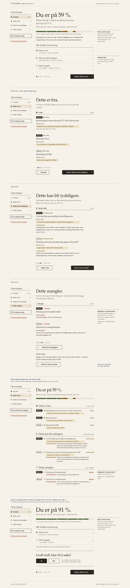
Konsept 12 – Kapitler
Konseptbeskrivelse (concept.md)
Konsept 12 – Kapitler
Idé
Konseptet er en hybrid av 01 og 09: utseendet til «Rolig rådgiver» og flyten til «Ett steg om gangen». Debriefen er bygd som en kort fagbok om CV-en din. Innholdsfortegnelsen står til venstre (Oversikt, Kapittel 1 · Dette er bra, Kapittel 2 · Dette kan bli tydeligere, Kapittel 3 · Dette mangler), med prikkede ledelinjer og antall krav der en bok har sidetall. Ett kapittel vises om gangen. I lesekolonnen står det annonsen ber om, og i margen står det CV-en din sier: sitatet med 01s markeringsfarge og forbedringshintet. «Forrige kapittel» og «Neste kapittel» står nederst, med en kolumnetittel i kursiv i midten («Kapittel 2 av 3 · side 3 av 4»). Inputen har tre deler (Del 1 CV, Del 2 Annonse, Del 3 Analyser) og står loddrett som en innholdsfortegnelse, med et «Forord» som presenterer appen.
Hva er tatt fra hvilket konsept
#EEDFBF bak kursiv serif | Poengstripen (må-krav er dobbelt så brede), nå i 01-palett |Nytt i 12: kapittelmetaforen med kolumnetittel og sidetall, delene som innholdsfortegnelse i stedet for en stegindikator, todelingen «Annonsen: …» (kolonne) mot «Fra CV-en din» (marg), en innholdsfortegnelse som venter på sidetall mens appen analyserer, og knappen «Lim inn redigert CV» på slutten av siste kapittel.
Palett
#F6F1E9 | – |#FFFDF9 | – |#2A2420 | ca. 14:1 |#5E544B | 6,6:1 |#D4C9BA / #E6DDD0 | dekor |#EEDFBF | blekk-tekst over |#4A6536 | 5,8:1 |#7A5710 | 5,8:1 |#8A3B2B | 6,9:1 |#E4DACB med #62584F | 5,0:1 |#EFE4CC | blekk-tekst |#3E5468 på #E9EEF2 | ca. 7:1 |Sekundærknapper har kant i blekk, og «Forrige kapittel» har kant i #5E544B, så kontrollkantene er over 3:1. Status vises aldri bare med farge: hver status har eget ord, eget tegn (fylt, halvfylt eller tom sirkel) og eget kapittel.
Typografi
- Serif:
Georgia, 'Iowan Old Style', 'Palatino Linotype', 'Book Antiqua', 'Times New Roman', serif. Brukes til scoren (68 px), kapitteloverskrifter (30 px), kravtitler (22 px), sitater (16 px kursiv), «Del 1»-tall, kapittelnummer og kolumnetittel. - Grotesk:
'Segoe UI', 'Helvetica Neue', Helvetica, Arial, sans-serif. Brukes til brødtekst (15–17 px), etiketter, knapper og antallet i innholdsfortegnelsen. Antallet står i grotesk fordi Georgias minuskeltall gjør at «0 krav» kan leses som «o krav». - Ingen tekst er under 13 px.
Layout
- Input (01, 02, 05): 01s tokolonne. Venstre side (120–520) har overskriften, forordet og «Innhold i gjennomgangen», som viser studenten de tre kapitlene før hun starter. Høyre side (640–1320) har delene. Bare én del er åpen om gangen. Når CV-en limes inn, slås del 1 sammen og del 2 åpnes, uten ekstra klikk. Personvernvarselet og «Analyser» står alltid synlig nederst.
- Resultat (03): innholdsfortegnelsen (120–370), lesekolonnen (420–880) og margen (930–1320). Kapitteloverskriften går over både kolonnen og margen, som et kapittelstart i en bok. Hvert krav har merke og status → kravtittel → «Annonsen: «…»» i kolonnen, og «Fra CV-en din» + sitat → «Forbedringshint» i margen. Navigasjonen nederst har samme plassering på alle sider.
Funksjonalitet og klikk sammenlignet med 09
- Til et bestemt kapittel: ett klikk i innholdsfortegnelsen (som i 09).
- Gjennom hele debriefen: «Neste kapittel» × 3 (som i 09).
- Alt på én gang: «Vis alt på én side» ligger fast under innholdsfortegnelsen (som i 09), og markøren følger med når man ruller.
- Ny runde etter redigering (UJ-1): «Lim inn redigert CV» → del 1 åpnes med teksten markert → lim inn → «Analyser». Det er 2 klikk og én innliming. 09 brukte 3 klikk («Endre CV eller annonse» → «Endre» → «Analyser»). Veien via «Endre CV eller annonse» finnes fortsatt.
- Input: ingen «Neste»-knapp mellom delene. Innlimingen åpner neste del.
Slik løses FR-ene
- FR-1: «Lim inn CV her:» og «Lim inn annonse her:», «Bare en CV og en annonse per analyse» under overskriften, tegnteller i hvert felt. «Analyser» er deaktivert med en grunn ved siden av (01, annotert). For lang tekst: rød kant, rød teller «15 482 / 15 000 tegn», «Teksten er for lang» og deaktivert knapp (04).
- FR-2: sammenslåtte deler beholder teksten, og «Endre» åpner dem igjen. Etter «Analyser ny annonse» står «CV-en er beholdt» på del 1, og annonsefeltet er tomt (04).
- FR-3: låseikon + «CV-en din sendes til Claude for analyse. Appen lagrer den ikke.» rett over «Analyser» i alle input-tilstander.
- FR-7/8: «Du er på 59 %.» + «Fikser du de 2 delvis truffede kravene, kan du nå 73 %.». Poengstripen og sidenoten «Slik er scoren regnet» viser regnestykket.
- FR-9: kapitlene kommer i rekkefølgen truffet → delvis → mangler, og innenfor hvert kapittel kommer må-krav før bør-krav. Truffet og delvis truffet har sitat, og delvis truffet og mangler har hint. «Vis alt på én side» beholder rekkefølgen.
- FR-10: varianten med 91 % har «Godt treff, klar til å søke?» mellom to blekklinjer med Ja/Nei og forklaring. Under 90 % vises spørsmålet ikke. 04 viser «Ja» → «Analyser ny annonse».
- FR-11: kundekontakt har hintet «Fant ikke belegg i CV-en for dette kravet» og en margnote med varseltegn, «Nedgradert av sitatkontrollen», med det oppdiktede sitatet. Oversikten viser til kapittel 3.
- FR-12/14/17: meldingen står der kapitlene ellers ville kommet, mellom to hårfine linjer, og feltene er fortsatt utfylt (04).
- FR-13: delene er låst, og «Endre» er deaktivert. Knappen viser «Analyserer …», og innholdsfortegnelsen står klar med «…» i stedet for sidetall (02).
- FR-15/16: demobånd med «Demomodus – ingen API-nøkkel funnet» og README-henvisning, og «Bruk eksempel» i fullbredde. Delene har merket «Eksempeldata». Resultatet er merket tre steder: båndet, merket over scoren og den loddrette margteksten (05).
Score-regnestykket (FR-7, FR-8)
- Match-score: 6,5 ÷ 11 × 100 = 59,09 % → 59 %.
- Potensiell score: delvis → truffet gir 6,5 + 1 + 0,5 = 8; 8 ÷ 11 × 100 = 72,73 % → 73 %. Krav som mangler, telles ikke med.
- Variant: krav 4, 5 og 6 truffet etter Yvonnes egen redigering, krav 7 mangler fortsatt: 2+2+1+2+1+2+0 = 10; 10 ÷ 11 × 100 = 90,91 % → 91 % ≥ 90 %, så spørsmålet vises. Ingen krav er delvis truffet, så ingen potensiell score vises.
- Sitatene er ordrette delstrenger av eksempel-CV-en fra 09. Tellerne 357 og 426 tegn er gjenbrukt fra 09.
Svakheter og risiko
- Hintet står i margen. Det er det viktigste studenten skal handle på (SM-5), og noen kan lese margen som noe ekstra. Det demper vi med grotesk i blekk, 15 px og en okerfarget etikett. Under ca. 1280 px må margen flyttes inn under kravet.
- Kapittelmetaforen («side 3 av 4», «Forord») kan virke pyntet for den som bare vil ha tallet. Oversikten svarer likevel på side 1.
- Innholdsfortegnelsen med ledelinjer er smal (250 px). Lengre kapitteltitler eller oversettelser vil ikke få plass på én linje.
- Når en del slås sammen automatisk ved innliming, kan det overraske. Fokus må flyttes tydelig, og «Endre» må nås med tastatur. Dette bør testes i SM-5.
- Systemfonter: Georgia og Segoe UI ser ulike ut på macOS og Linux. Georgias minuskeltall i «Del 1» og kapittelnummer er tilsiktet, men tall i data står i grotesk.
Impeccable-prinsipper
- Mode: inputen er Operate (kjente kontroller, én del om gangen), og debriefen er Read (dokumentform, lesekolonne på ca. 60–70 tegn). Signaturgrepet er margsystemet fra fagbøker brukt som innholdsfortegnelse og marginalia, ikke dekor.
- Craft floor «Refuse»: ingen kicker over overskriftene. «Kapittel 2 · Dette kan bli tydeligere» er én overskriftslinje, og nummeret er med fordi rekkefølgen betyr noe for leseren. Ingen kort i kort, ingen hero-metric-fliser, ingen gradienttekst, ingen fargede venstrekanter og ingen glass. Ikonene er tegnet som SVG i én strektykkelse (1,5), ikke emoji eller unicode.
- Verify: all tekst ≥ 13 px og ≥ 4,5:1, kontrollkanter ≥ 3:1. Tilstandene som er tegnet: deaktivert, venter, feil, tom, for lang og demo. Plassholder og markør er tegnet i paletten. Alle filene er rendret i headless Chrome og kontrollert visuelt.
- Farge med jobb: blekk er den eneste aksentfargen. De tre statusfargene er bare brukt på status.
- Avvik:
impeccable context-launcheren ble ikke kjørt, og PRODUCT.md/init ble hoppet over (etter oppdraget). Det ble brukt systemfont-stakker i stedet for selvhostede fonter, fordi oppdraget krever det.
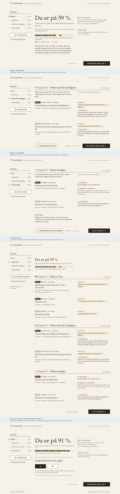
Konsept 13 – Rolig iterasjon
Konseptbeskrivelse (concept.md)
Konsept 13 – Rolig iterasjon
Idé
Dette er en rolig veileder som går gjennom CV-en sammen med studenten én ting om gangen, og som gjør det enkelt å prøve igjen. Utseendet er hentet fra 01 «Rolig rådgiver»: papir og blekk, serif-overskrifter, hårfine linjer og sitatmarkering. Flyten er hentet fra 09 «Ett steg om gangen»: tre inputsteg som slås sammen med «Endre», og en trinnvis debrief med innholdsfortegnelse, «Vis alt på én side» og poengstripe. Konseptet løser de tre svakhetene som 09 selv peker på:
1. Alle gapene på ett blikk. Oversiktstrinnet lister alle sju kravene i FR-9-rekkefølge (truffet → delvis → mangler, må før bør), én kort linje per krav. Gapene ses uten et eneste klikk, og hver gruppe har en lenke til sitt fokuserte trinn.
2. CV-en ved siden av. I de fokuserte trinnene står en sammenleggbar «Din CV»-visning til høyre. Sitatene i trinnet er markert i CV-teksten i 01s sitatfarge, og hvert sitat har et nummer (1, 2) som også står i margen ved kravet. Studenten ser derfor både hva hun skrev og *hvor* det står. Det siste er viktig, for hintet sier at presentasjonen «står nederst».
3. Prøv igjen på ett klikk. «Lim inn oppdatert CV og analyser på nytt» ligger fast i venstrespalten på alle trinn og nederst i siste trinn. Knappen åpner steg 1 med den gamle teksten markert, slik at det hun limer inn, erstatter den, og annonsen beholdes. Etter ny analyse står «Forrige analyse: 59 %» diskret under den nye scoren, sammen med listen «Endret siden forrige analyse». Forrige score ligger bare i minnet i fanen (FR-2).
Grunnprinsippet er fortsatt én ting om gangen: ett åpent inputsteg, ett debrief-trinn og ett krav i fokus. CV-visningen er støtte, ikke et eget fokus, og kan skjules.
Tatt fra 01 og fra 09
#EEDFBF | Innholdsfortegnelse til venstre med antall per trinn, «Vis alt på én side» |Palett
#F6F1E9 | – |#FFFDF9 | – |#2A2420 | 14:1 på papir; papirtekst på blekk 13,6:1 |#5E544B | 6,6:1 på papir, 5,6:1 på markering |#D4C9BA / #E6DDD0 | dekor |#EEDFBF | blekk-tekst 11:1 |#ECE3D4 | dempet tekst 5,8:1 |#4A6536 | 5,8:1 |#7A5710 | 5,8:1 |#8A3B2B | 6,8:1 |#9A4A2E | 5,5:1 |#E4DACB med #62584F | 5,0:1 |#EFE4CC | blekk 12:1 |#D9E2EA | blekk 11,7:1 |#3E5468 på #E9EEF2 | 6,7:1 |Status skilles aldri bare med farge. Hver status har eget ord og eget tegn (fylt, halvfylt og tom sirkel), og i stripen har «mangler» stiplet kant.
Typografi
- Serif:
Georgia, 'Iowan Old Style', 'Palatino Linotype', 'Book Antiqua', 'Times New Roman', serif. Score 60 px, trinnoverskrift 34 px, seksjoner 26 px, kravtitler 22 px, sitater 17 px kursiv. - Grotesk:
'Segoe UI', 'Helvetica Neue', Helvetica, Arial, sans-serif. Brødtekst 15–17 px, metadata og merker 13–14 px. Ingen tekst under 13 px. - Prosenttall har hardt mellomrom («59 %»), så tallet og prosenttegnet aldri deles over to linjer.
Layout (1440 px)
- Input (01, 02, 05): venstre kolonne (x 120–520) har overskrift, ingress og tre prinsipper. Høyre kolonne (x 640–1320) har stegindikator og steg. Bare ett steg er åpent. Ferdige steg er sammenslåtte rader, kommende steg er dempede rader. Personvernvarselet står alltid over «Analyser».
- Debrief (03): tre spalter. Venstre (x 120–336) har innholdsfortegnelse, «Vis alt på én side» og snarveien for ny analyse. Lesekolonnen (x 392–900, ca. 65–70 tegn) viser ett trinn. Høyre (x 948–1320) har CV-visningen, som er lagt sammen på oversikten og åpen i trinn 2–4. Mellom venstrespalten og lesekolonnen ligger margen med tallmarkørene.
- Ingen kort i kort og ingen fliser. Grupper skilles med en blekklinje under overskriften og hårfine linjer mellom krav.
Hvordan FR-ene løses
- FR-1: etikettene «Lim inn CV her:» og «Lim inn annonse her:», hjelpeteksten «Bare en CV og en annonse per analyse» og «Analyser». Knappen er deaktivert når et felt er tomt eller over grensen (01-annotasjon, 04). Tegnteller «x / 15 000 tegn» i hvert felt. Over grensen får feltet teglkant og teller, og «Teksten er for lang» vises (04).
- FR-2: sammenslåtte steg beholder teksten, og «Endre» åpner feltet igjen. «Lim inn oppdatert CV og analyser på nytt» beholder annonsen. Etter «Analyser ny annonse» står «CV-en er beholdt», og annonsefeltet er tomt (04). Forrige score finnes bare i minnet i fanen og nullstilles når annonsen byttes.
- FR-3: «CV-en din sendes til Claude for analyse. Appen lagrer den ikke.» med låsikon rett over «Analyser» i alle input-tilstander.
- FR-7/FR-8: «Du er på 59 %.» er overskriften, og FR-8-setningen «Fikser du de 2 delvis truffede kravene, kan du nå 73 %.» står rett under. Poengstripen og teksten «6,5 av 11 poeng» viser regnestykket. I varianten står setningen «Ingen delvis truffede krav, derfor vises ingen potensiell score.»
- FR-9: oversikten og trinnene følger truffet → delvis → mangler, med må før bør. Hvert krav har et må- eller bør-merke, truffet og delvis truffet viser sitatet, og delvis truffet og mangler viser forbedringshintet.
- FR-10: spørsmålet «Godt treff, klar til å søke?» står mellom to blekklinjer rett under scoren i varianten med 91 %, med Ja/Nei og hva hvert valg betyr. Ja → «Analyser ny annonse» (04). Nei → hun blir på resultatsiden.
- FR-11: kundekontakt er nedgradert til mangler med hintet «Fant ikke belegg i CV-en for dette kravet», merket «nedgradert» på oversikten og med en teglmerknad om det oppdiktede sitatet «Kundebehandling i butikk». CV-visningen viser at teksten ikke står der.
- FR-12/FR-14/FR-17: «Ingen krav funnet, har du husket annonsen?», «Klarte ikke å analysere, prøv igjen» og «Ekte analyse krever API-nøkkel – se README» står der resultatet ellers ville stått. Feltene er fortsatt utfylt, og «Analyser» er tilgjengelig igjen etter en feil (04).
- FR-13: «Analyserer …» i serif med en stille fremdriftslinje. «Analyser» er deaktivert og «Endre» skjult mens analysen pågår (02). Ved ny analyse står «Forrige analyse: 59 %» under (04).
- FR-15/FR-16: banneret «Demomodus – ingen API-nøkkel funnet» med «Bruk eksempel». Feltene får merket «Eksempeldata», og resultatsiden er merket tre ganger: banneret, en Eksempeldata-linje over scoren og en loddrett marglinje (05).
Score-regnestykket (FR-7, FR-8)
- Match-score: 6,5 ÷ 11 × 100 = 59,09 % → 59 %.
- Potensiell score: krav 4 og 5 regnes som truffet → 2 + 2 + 1 + 2 + 1 = 8; 8 ÷ 11 × 100 = 72,73 % → 73 %.
- Variant etter Yvonnes egen redigering (krav 4, 5 og 6 truffet, krav 7 mangler fortsatt): 2 + 2 + 1 + 2 + 1 + 2 + 0 = 10; 10 ÷ 11 × 100 = 90,91 % → 91 % ≥ 90 %, så spørsmålet vises. Det finnes ingen delvis truffede krav, så ingen potensiell score vises.
- Tegntellerne er regnet fra teksten: CV 357 tegn, annonse 426 tegn, oppdatert CV 449 tegn.
Svakheter og risiko
- Tre spalter krever bred skjerm. Under ca. 1280 px må CV-visningen bli en skuff som legges over lesekolonnen, eller flyttes under kravet.
- Oversikten med alle sju kravene gjør trinn 2 («Dette er bra») nesten overflødig for den som bare skummer. Det er bevisst, men det svekker «én ting om gangen» litt.
- Sammenligningen med forrige score kan friste til å «jakte poeng» ved å omformulere uten å endre innhold. Hintene og sitatkontrollen demper dette, men det bør testes i SM-5.
- «Lim inn oppdatert CV» forutsetter at hun limer inn hele CV-en. Limer hun inn bare en del, faller scoren, og appen kan ikke se forskjell. Teksten under knappen sier derfor «Lim inn den nye versjonen».
- I demomodus fører snarveien for ny analyse til FR-17-meldingen, fordi egen tekst ikke analyseres. Det er riktig etter PRD-en, men kan overraske sensor.
- Systemfonter (Georgia/Segoe UI) ser ulike ut på macOS og Linux. I en ekte app bør skriftene selvhostes.
- Nummereringen i CV-visningen følger kravene, ikke CV-rekkefølgen. Derfor kan 2 stå over 1 i CV-en (som i trinn 3).
Impeccable-prinsipper som ble brukt
- Operate-modus: kjente kontroller (steg, tekstfelt, innholdsfortegnelse, knapper) med presisjon og tilbakeholdenhet. Verdenen fra 01 eier type, palett og marger. Signaturgrepene er poengstripen og de nummererte sitatmarkeringene som binder krav og CV sammen.
- Craft floor, «Refuse»: ingen kicker eller etikett over overskrifter, ingen kort i kort, ingen hero-metric-mal med støttetall (forrige score er en setning, ikke en flis), ingen gradienttekst, ingen glass, ingen fargede venstrekanter på meldinger og ingen hard offset-skygge. Ikonene (lås, info, varsel, sirkelpil, piler, chevroner) er tegnet i én strektykkelse, ikke unicode eller emoji.
- Tilstander: deaktivert, venter, feil, tom, for lang, demo og ny runde er tegnet. Nettleserflatene er også med: markert tekst (
#D9E2EA), fokusramme i blekk på aktivt felt og tegnteller i paletten. - Kontrast: all tekst ≥ 4,5:1 (se paletten). Sekundærtekst er tonet varmt fra blekket, ikke grå.
- Lys modus valgt ut fra bruken: en student ved pulten på dagtid som leser om sin egen CV.
- Avvik:
impeccable context-launcheren ble ikke kjørt, og init/PRODUCT.md ble hoppet over, slik oppdraget sa. Selvhostede skrifter ble erstattet av systemfont-stakker, fordi oppdraget krever det.
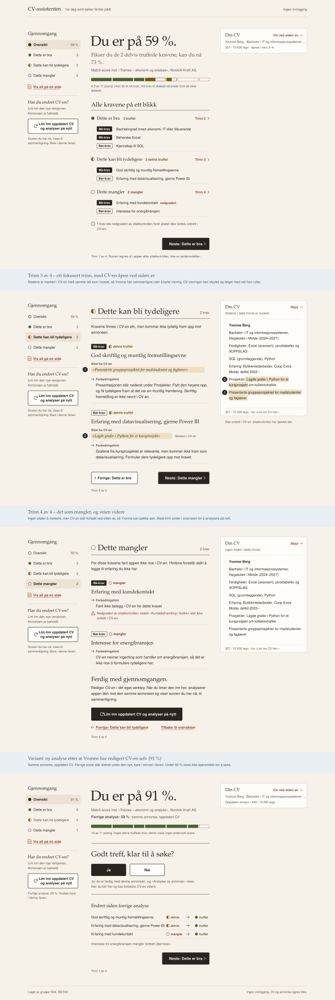
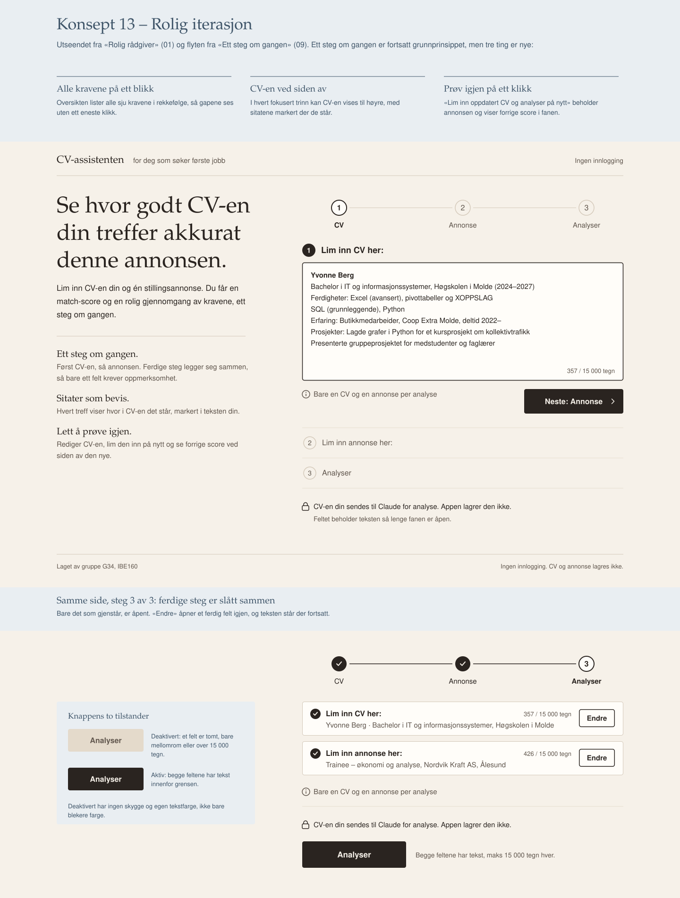
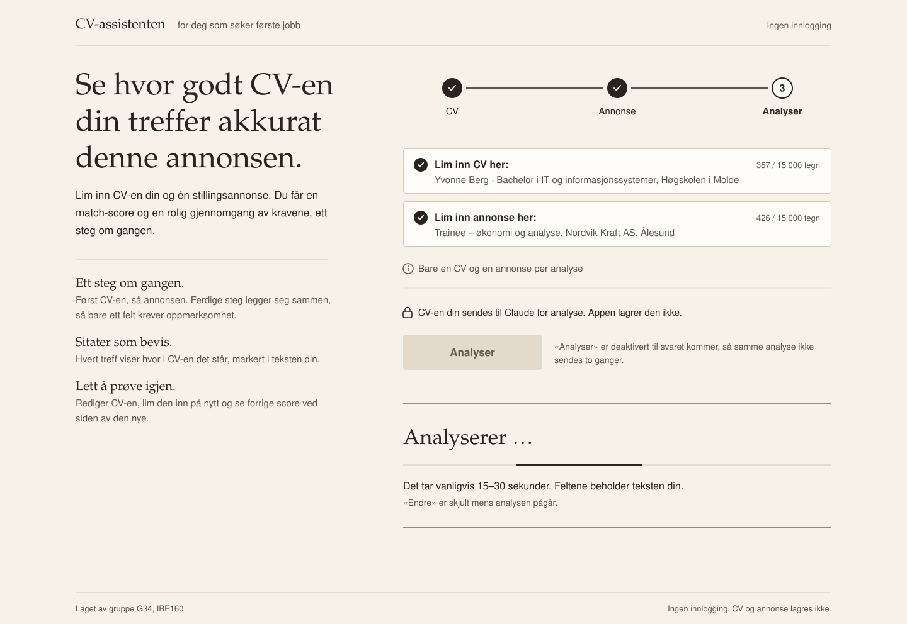
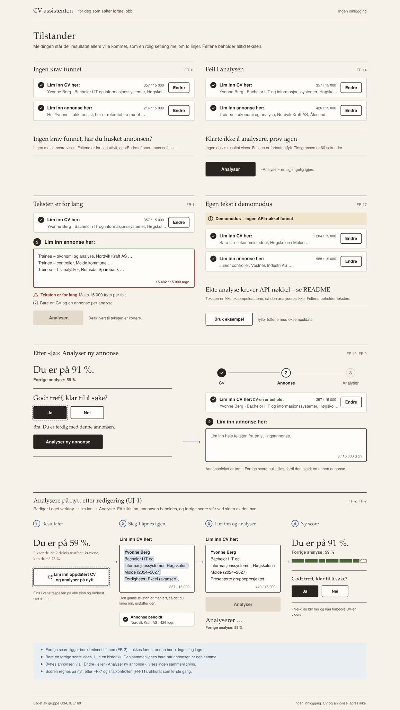
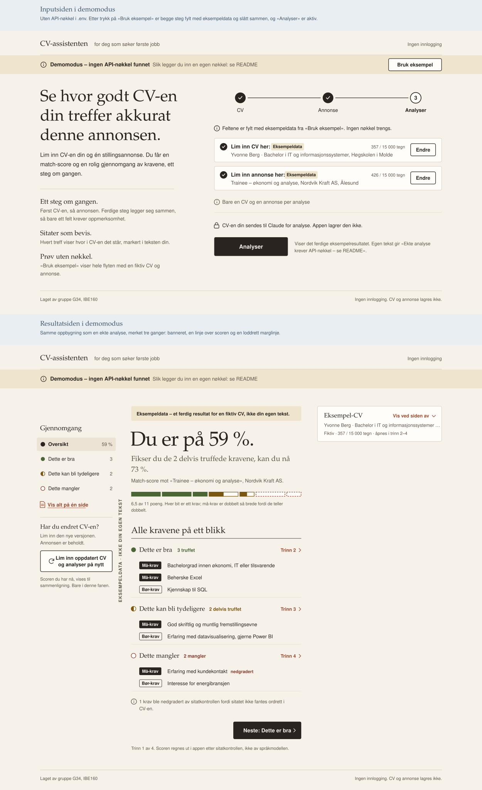
Konsept 01 – Rolig rådgiver
Konseptbeskrivelse (concept.md)
Konsept 01 – Rolig rådgiver
Idé
Appen oppfører seg som en rolig studieveileder som har lest CV-en din, ikke som et dashbord. Inputsiden er en kort, redaksjonell presentasjon med to tekstfelt, og resultatsiden leses som en kort rapport: overskriften er selve svaret («Du er på 54 %.»), ingressen er den potensielle scoren, og kravene følger som avsnitt med sitatene markert som understreket tekst fra din egen CV. Margene brukes som i en fagbok: må/bør-merker henger i venstre marg, og sitatkontrollen kommenterer i høyre marg.
Palett
#F6F1E9 | – |#FFFDF9 | – |#2A2420 | ca. 14:1 |#5E544B | 6,6:1 |#D4C9BA / #E6DDD0 | dekor |#EEDFBF | bak blekk-tekst |#4A6536 | 5,8:1 |#7A5710 | 5,8:1 |#8A3B2B | 6,9:1 |#9A4A2E | 5,5:1 |#E4DACB med #62584F | 5,0:1 |#EFE4CC | blekk-tekst |#3E5468 på #E9EEF2 | – |Status skilles aldri bare med farge: hver status har eget ord, egen overskrift og eget tegn (fylt, halvfylt, tom sirkel).
Typografi
- Overskrifter, score og sitater: serif,
Georgia, 'Iowan Old Style', 'Palatino Linotype', 'Book Antiqua', 'Times New Roman', serif. Scoren 64–72 px, seksjoner 30 px, kravtitler 22 px, sitater 17 px kursiv. - Brødtekst og kontroller: grotesk,
'Segoe UI', 'Helvetica Neue', Helvetica, Arial, sans-serif. 16–18 px brødtekst, 13–15 px for metadata og hint-etiketter. Ingen tekst under 13 px.
Layoutprinsipp
- Inputsiden: 1200 px innhold på 1440 px artboard. Venstre kolonne (440 px) forklarer appen og de tre prinsippene, høyre kolonne (680 px) har feltene, personvernvarselet og «Analyser» i den rekkefølgen man bruker dem.
- Resultatsiden: et tre-delt margsystem. Venstre marg (120–360) har metadata og må/bør-merker, lesekolonnen (400–1040, ca. 70 tegn) har teksten, høyre marg (1080–1320) har sidenoter som sitatkontrollen. Én tynn blekklinje under hver statusoverskrift, ellers bare hårfine skillelinjer. Ingen kort, ingen nøkkeltall-fliser.
Hvordan konseptet løser funksjonaliteten
- FR-1/FR-3: eksakte etiketter, hjelpetekst, tegnteller «x / 15 000 tegn» i hvert felt, personvernvarselet rett over knappen, og «Analyser» tydelig deaktivert (annotasjonen i 01 viser begge tilstander).
- FR-7/FR-8/FR-9: scoren er overskriften, den potensielle scoren står rett under som FR-8-setningen, og en stille linjefigur viser 54 % mot 67 % mulig. Kravene følger truffet → delvis truffet → mangler, må før bør. Hvert krav viser sitat og/eller forbedringshint. «Slik er scoren regnet» står som en fotnote, slik at tallet aldri virker magisk.
- FR-11: det nedgraderte kravet får hintet «Fant ikke belegg i CV-en for dette kravet» og en sidenote i høyre marg som viser at sitatet ikke sto ordrett i CV-en.
- FR-10: varianten med 92 % setter «Godt treff, klar til å søke?» mellom to blekklinjer rett under scoren, med Ja/Nei og hva hvert valg betyr. Under 90 % vises spørsmålet ikke (annotert). 04 viser «Analyser ny annonse» etter Ja og inputsiden med tomt annonsefelt og beholdt CV.
- FR-12/13/14/17: meldinger står der resultatet ellers ville stått, som en rolig setning i serif mellom to linjer, ikke som røde varselbokser. Feltene er alltid fortsatt utfylt.
- FR-15/16: demobånd under toppen, «Bruk eksempel» i båndet, og resultatsiden merket tre ganger: banneret, en «Eksempeldata»-boks over scoren og en loddrett marglinje «EKSEMPELDATA · IKKE DIN EGEN TEKST».
Svakheter og risiko
- Den lange, luftige resultatsiden krever scrolling. Med 15–20 krav blir den lang, og «mangler» havner langt nede (jf. åpent spørsmål §9.2).
- Serif-scoren er rolig, men mindre «skannbar» enn et dashbord for den som bare vil se tallet.
- Systemfonter: Georgia og Segoe UI ser ulike ut på macOS/Linux. I en ekte app bør serif og grotesk selvhostes (Impeccable fraråder systemfont som visningsstemme, men oppdraget krever systemfonter i SVG-ene).
- Sidenoter i høyre marg forutsetter bred skjerm. Under ca. 1280 px må de flyttes inn under kravet.
- Den beroligende tonen kan dempe alvoret i et manglende må-krav. Teglfarge, «Mangler»-ordet og må-merket må gjøre den jobben.
Eksempelinnhold
CV-utdrag (Yvonne Lund, fiktiv) og annonse «Trainee – forretningsutvikling og analyse, Nordvik Kraft AS» (fiktiv). Alle sitater er kontrollert som ordrette delstrenger av CV-teksten i generatorskriptet. Det oppdiktede sitatet «Ledet et prosjektteam på fire studenter» finnes ikke i CV-en, og derfor er kravet nedgradert.
Score-regnestykket (FR-7)
Første analyse (03, 05)
Match-score = 6,5 ÷ 12 × 100 = 54,17 % → 54 %.
Potensiell score (FR-8, delvis → truffet, mangler telles ikke): 6,5 + 1 + 0,5 = 8 ÷ 12 × 100 = 66,67 % → 67 %.
Variant etter ny runde (03, innfelt; 04)
Yvonne har selv redigert CV-en (dataanalyse og økonomiverv er beskrevet tydeligere, og bacheloroppgaven er lagt til). Alle må-krav er truffet: 4 × 2 = 8. Bør: Excel 1 + økonomi 1 + energi 1 + Power BI 0 = 3. Sum 11 ÷ 12 × 100 = 91,67 % → 92 % ≥ 90 %, så «Godt treff, klar til å søke?» vises. Det finnes ingen delvis truffede krav, så ingen potensiell score vises.
Impeccable-prinsipper som ble brukt
- Read-modus for resultatsiden: en dokumentform (rapport/artikkel) med rolig lesekolonne på ca. 70 tegn, der «verdenen» bare eier rammen. Signaturgrepet er margsystemet fra fagbøker.
- Craft floor, «Refuse»: ingen hero-metric-mal med fliser, ingen like kort, ingen kicker eller etikett over overskriftene (begrepet «Match-score» står i setningen under scoren i stedet), ingen fargede venstrekanter på meldinger, ingen gradienttekst og ingen glass. Ikoner er tegnet som SVG i én strektykkelse, ikke unicode eller emoji.
- Kontrast: all tekst ≥ 4,5:1 (se paletten), og sekundærtekst tones varmt fra blekket i stedet for grått.
- Tilstander: deaktivert, venter, feil, tomt og for lang er tegnet. Rullefelt og tegnteller er tilpasset paletten («browser surfaces»).
- Lys modus valgt ut fra bruken: en student ved pulten på dagtid som leser et dokument om seg selv. Ikke valgt ut fra kategori.
- Avvik:
impeccable context-launcheren ble ikke kjørt (oppdraget forbød installasjon), og selvhostede fonter ble erstattet av systemfont-stakker fordi oppdraget krever det.
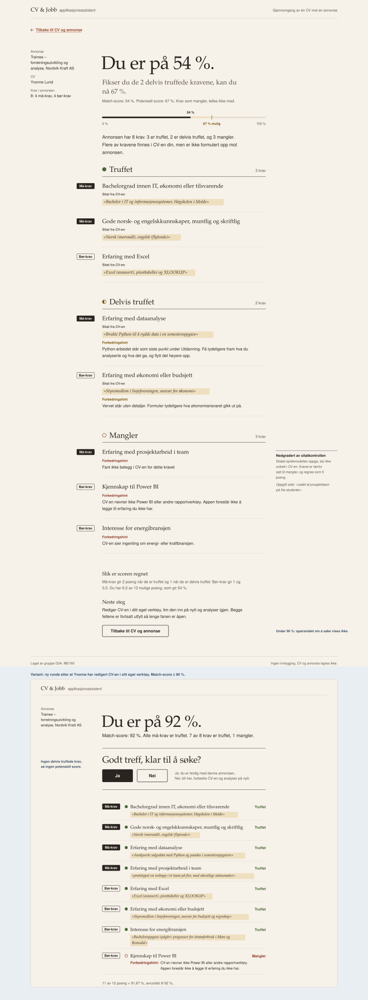
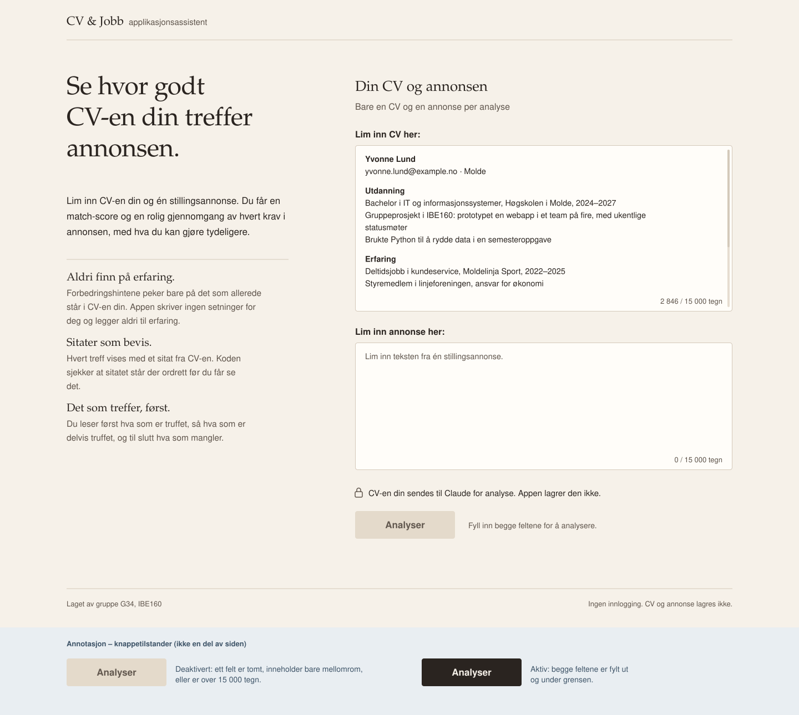
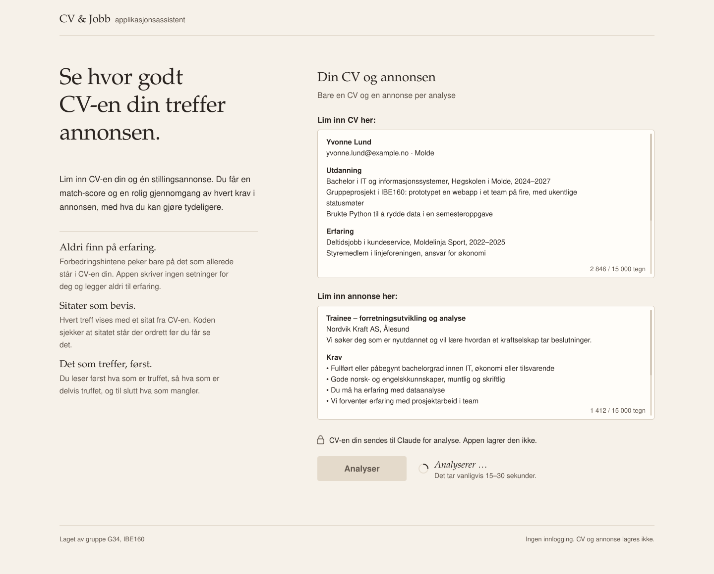
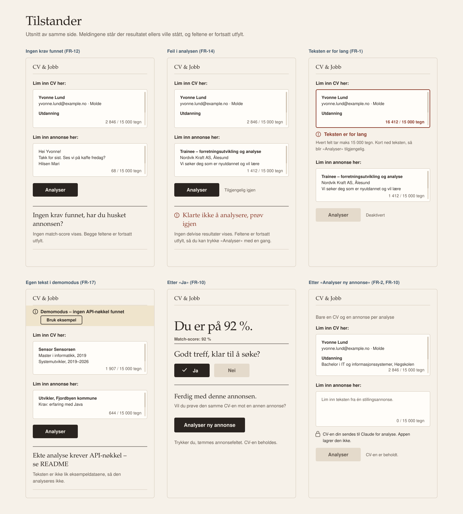
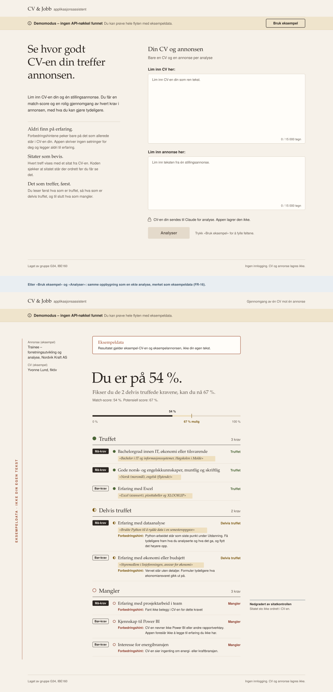
Konsept 02 – Side om side / Bevisføring
Konseptbeskrivelse (concept.md)
Konsept 02 – Side om side / Bevisføring
Idé
Resultatsiden er en delt visning, som et godt diff-verktøy: CV-teksten med linjenummer til venstre og kravlista til høyre. Hvert sitat er markert direkte i CV-teksten og har samme nummer som kravet det beviser. En tynn linje i midtfeltet kobler dem sammen. Brukeren trenger ikke stole på appen, for beviset står i hennes egen tekst. Krav som ikke har noe sitat, står samlet under CV-en i «Ikke funnet i CV-en», slik at også det som mangler, blir synlig på CV-siden.
Filer
01-landingsside.svg | Inputsiden: kort presentasjon (sitater som bevis, aldri finn på erfaring, må-krav teller dobbelt), to felt side om side med linjenummer, hjelpetekst, personvernvarsel, «Analyser» deaktivert (annonsefeltet er tomt og har fokus), avsenderblokk i bunnteksten |02-analyserer.svg | FR-13: begge feltene utfylt, knappen viser «Analyserer …» med spinner og er deaktivert |03-resultat-debrief.svg | Resultatsiden (1440 × 1986): score, potensiell score, poengstripe, delt visning med koblinger, nedgradert krav, variant på 95 % med «Godt treff, klar til å søke?» Ja/Nei |04-tilstander.svg | FR-12, FR-14, FR-1 (for lang), FR-17 og etter Ja → «Analyser ny annonse» (annonsefeltet tømt, CV-en beholdt) |05-demomodus.svg | FR-15/16: demobanner med «Bruk eksempel», felt merket «Eksempeldata», og resultatsiden med skravert merke for eksempeldata |Palett
#F2F4F7 | kjølig grå |#FFFFFF | ruter og felt |#151A22 | ca. 17:1 på hvitt |#434D5E / #5C6575 | ca. 8,8:1 / 5,9:1 på hvitt |#CDD3DC, #E3E7EC | |#F6F7F9 | |#1F3B70 | hvit tekst ca. 11:1 |#2F5BD3 | |#17683F, markering #D9EEE1, strek #2A7F52 | heltrukken understrek, fylt sirkel med hake |#7A4E00, markering #FAE9C3, strek #A87410 | stiplet understrek, halvfylt sirkel, prikkmønster |#A3221B, markering #FBE2DE, strek #B8362F | ingen markering i CV-en, sirkel med strek, skravering |#E7ECF7 + diagonal skravering | |#E4E7EC, tekst #525B69 (ca. 5,9:1) | |Status kan leses uten farge: ikonformen (fylt / halv / tom med strek), strektypen (heltrukken / stiplet / ingen), mønsteret i poengstripa (fylt / prikket / skravert) og tekstetiketten står alltid sammen.
Typografi
- UI:
'Segoe UI', system-ui, -apple-system, 'Helvetica Neue', Arial, sans-serif. Skala 13 / 14 / 15 / 16 / 20 / 32 / 60 px, vekt 400 / 600 / 650 / 700. - Kildetekst:
'Cascadia Mono', Consolas, 'SF Mono', Menlo, monospace, 13 px. Brukes bare på det som faktisk er rå tekst eller måltall: CV-en, annonsen, sitatene, linjenummer, tegnteller og kravnummer. Det er brukerens egen tekst, ordrett, ikke pynt. Faste tegnbredder (textLength) gjør at markeringene ligger nøyaktig over sitatene. - Minste tekst er 13 px.
Layoutprinsipp
- Rutenett på 1440 px med 40 px marg. Inputsiden har to like kolonner (660 + 40 + 660), slik at CV og annonse også står side om side før analysen.
- Resultatsiden: CV-rute 660 px, midtfelt 70 px for koblingene, kravrute 630 px. Over dem er et resultatbånd i full bredde.
- Kravlista er gruppert truffet → delvis truffet → mangler, med må-krav før bør-krav i hver gruppe. Kravene nummereres 1–10 i visningsrekkefølgen, og nummeret går igjen i CV-margen, i poengstripa og i «Ikke funnet».
- Må-krav har mørk, fylt merkelapp, og bør-krav har merkelapp med kantlinje. De skilles altså også uten farge.
Hvordan konseptet løser funksjonaliteten
- FR-5/FR-11 (sitat og sitatkontroll): Sitatet vises to steder, markert i CV-en og gjentatt i kravet. Det nedgraderte kravet (8, Førerkort klasse B) viser det avviste sitatet med gjennomstreking og teksten «finnes ikke ordrett i CV-en – nedgradert av sitatkontrollen», og hintet «Fant ikke belegg i CV-en for dette kravet».
- FR-6 (hint): Hintene viser til linjenummer i CV-en («Excel-oversiktene i linje 18 …»). Delvis truffede krav står like ved sitatet hintet handler om. Krav som mangler, sier rett ut at det ikke finnes noe å formulere om.
- FR-7/FR-8: Scoren står øverst til venstre, og den potensielle scoren står rett under, med FR-8-setningen. Poengstripa viser formelen: hvert krav er et felt der må-krav er dobbelt så bredt som bør-krav, og fyllingen viser poengene brukeren har.
- FR-9: Rekkefølgen og må-før-bør er gjennomført. Alle delvis truffede krav og krav som mangler har hint.
- FR-10: Spørsmålet vises bare i varianten med 95 %. Hvordan Ja og Nei virker, står under knappene. Tilstanden etter Ja vises i 04.
- FR-1/2/3/13/14/12/15/16/17: Se 01, 02, 04 og 05. Feltene er fortsatt utfylt i alle tilstandene der PRD-en krever det.
Score-regnestykket (FR-7)
Hovedeksempel: Yvonne mot «Trainee – digitalisering, Romsdal Energi AS»
- Oppnådd: 2+2+2+1+1+1+0,5 = 9,5. Maks: 5 må × 2 + 5 bør × 1 = 15.
- Match-score: 9,5 ÷ 15 × 100 = 63,33 → 63 %.
- Potensiell score (delvis → truffet: krav 6 +1, krav 7 +0,5): 11 ÷ 15 × 100 = 73,33 → 73 %.
- Siden nedgraderingen skjer før beregningen, teller krav 8 som 0 poeng.
Variant: samme CV mot «Trainee IT-drift, Molde kommune»
- 4 må-krav truffet (8) + 1 bør-krav truffet (1) + 1 bør-krav delvis (0,5) = 9,5 av 10 → 95 % (≥ 90 %, så spørsmålet vises).
- Potensiell score: 10 ÷ 10 → 100 %.
Alle sitater finnes ordrett i CV-utdraget. Generatoren sjekker dette med assert, og den regner også ut scorene.
Svakheter og risiko
- Bredde: delt visning krever bred skjerm. Det er greit for v1, som bare er for PC, men visningen må stables på smale vinduer.
- Koblingslinjer: fordi kravlista er sortert etter status og CV-en etter linje, krysser linjene hverandre. Med 15–20 krav kan midtfeltet bli rotete. Da kan linjene vises bare for kravet man holder musepekeren over eller har valgt, mens nummerene alltid står.
- Lengde: lange CV-er gjør at CV-ruten og kravlista kommer ut av takt. I appen bør CV-ruten bli stående (sticky) og rulle til riktig linje når man velger et krav.
- Monospace: CV-teksten i monospace leses som «rå tekst». Det er bevisst, men kan føles teknisk for noen studenter.
- Krav som mangler: de har ikke noe sted i teksten. Det løses med blokken «Ikke funnet i CV-en», men det er det svakeste punktet i metaforen.
- Sitater som går over flere linjer: de må markeres over flere linjer. Det er ikke vist i skissen.
Impeccable-prinsipper som ble brukt
- Modus: inputsiden og resultatsiden er Operate. Ambisjonen ligger i presisjon og tilbakeholdenhet, ikke pynt, og kjente mønstre (diff, linjenummer, renne) får plass fordi brukeren skal gjøre en oppgave.
- Status uten farge alene: form, strektype, mønster og etikett står alltid sammen med fargen. Kontrastkravene i WCAG AA er sjekket for tekst og knapper.
- Avvist fra craft-floor: ingen småtittel over overskriftene, ingen like kort med ikon + overskrift + tekst (prinsippene er en enkel liste), ingen hero-metric-mal med støttetall i kort, ingen fargekant på venstre side, ingen gradienttekst, glass eller harde skygger, ingen emoji som ikoner. Alle ikonene er egne SVG-strøk med samme tykkelse.
- Monospace bare der det er data: CV-tekst, sitater, linjenummer og tegnteller, ikke som «teknisk» kostyme.
- Hierarki gjennom vekt og størrelse: scoren er det eneste store tallet. Resten bruker trinnene 13–20 px og vekten.
- Tekst fra produktet: alle de eksakte PRD-tekstene er brukt ordrett. Knappene sier hva de gjør, og feilmeldingene sier hva som skjedde.
- Avvik: Impeccable sin
context-launcher ble ikke kjørt (oppdraget forbød installasjon og init).craft-floor.mdble lest direkte. Krav om egen, selvhostet skrift ble overstyrt av oppdraget, som krever systemfonter.
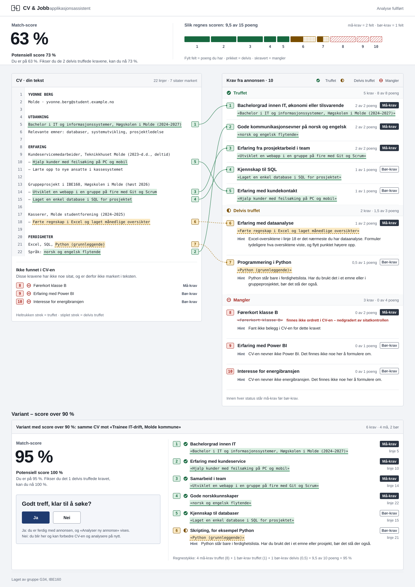
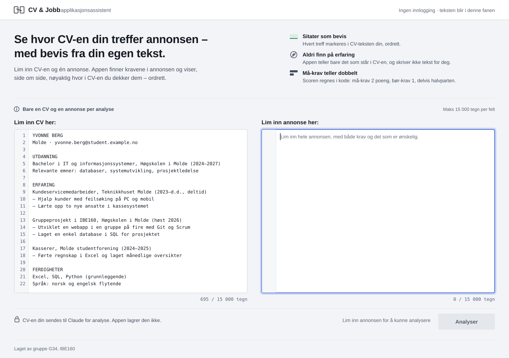
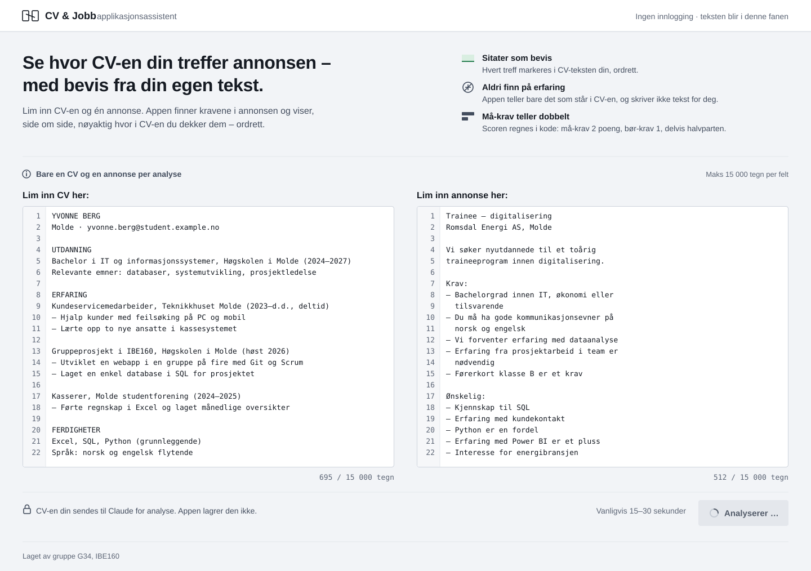
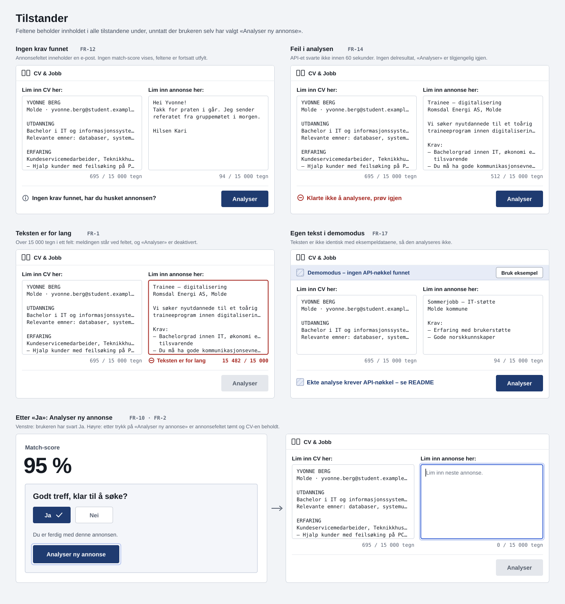
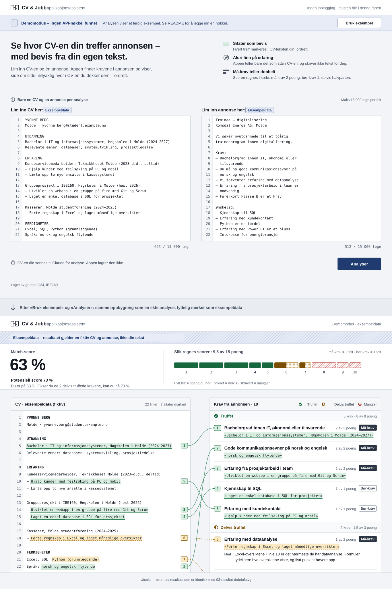
Konsept 03 – Papir og avkryssing
Konseptbeskrivelse (concept.md)
Konsept 03 – Papir og avkryssing
Idé
CV-en limes inn på linjert notatpapir, og annonsen på en kvitteringsrull. Resultatsiden er annonsen «rettet mot CV-en»: et papirark med en avkrysningsliste der hvert krav får en håndtegnet boks (hel hake = truffet, halv hake = delvis truffet, tom rød boks = mangler). Scoren står som en lærerkarakter i rødpenn med en ring rundt, sitatene er markert med gul tusj, og forbedringshintene står som vennlige kantnotater i margen. Tonen er en lærer som retter med blyant og gode notater, ikke et dashbord.
Filer
01-landingsside.svg– inputsiden med kort presentasjon («Slik retter vi»-kortet), felt, hjelpetekst, personvernvarsel, «Analyser» deaktivert (annonsen mangler) og aktiv versjon innfelt, avsenderblokk i bunnteksten.02-analyserer.svg– «Analyserer …», knappen deaktivert, begge felt utfylt.03-resultat-debrief.svg– resultatside med 62 %, potensiell score 77 %, ni krav og en innfelt variant med 92 % og «Godt treff, klar til å søke?» (Ja/Nei).04-tilstander.svg– Ingen krav funnet, Feil, Teksten er for lang, Egen tekst i demomodus, og «Analyser ny annonse» etter Ja.05-demomodus.svg– demobanner, «Bruk eksempel», og resultatsiden merket med stempelet EKSEMPELDATA og stripen «Eksempeldata – ikke din egen tekst».
Palett
#ECE6D9 |#FBF8F1 |#26231F |#3A362F |#5F5A51 |#1F3F8F |#A8261B |#F5E6A0 |#D3DCE9 / #DFA096 |#F6E7B0 med kant #B89B45 |Kontrast (omtrent): blekk på papir 15:1, rødpenn på papir 6,8:1, blekkblå på papir 9:1, dempet tekst på papir 6,3:1 og på skrivebord 5,4:1. Alt er over AA for brødtekst.
Typografi
- Serif (Charter → Iowan Old Style → Georgia): overskrifter, kravtekst, brødtekst. Gir følelsen av en trykt side.
- Skrivemaskin (Courier New → ui-monospace): feltetiketter, hjelpetekst, sitater og tellere. Monospace brukes bare til det som er ordrett tekst eller måling (sitat, tegnteller, metadata), ikke som pynt.
- Håndskrift (Segoe Print → Bradley Hand → Noteworthy → Comic Sans MS): bare lærerens stemme, det vil si scoren, kantnotatene og korte markeringer. Aldri i felt eller knapper.
- Minste tekst er 13 px (tellere og metadata). Kravtekst 20 px, seksjonstitler 30 px, H1 46 px.
Layoutprinsipp
Ett papirark per skjermbilde på et varmt skrivebord, med et fast rutenett: margstrek til venstre, innholdskolonne (ca. 620 px for sitater) og en egen margkolonne til høyre (ca. 330 px) som bare inneholder notater. Status leses tre ganger: seksjonstittel, boksen og hakens form. Fargen er aldri alene om å bære status. Truffet → delvis → mangler går ovenfra og ned, og må-krav (fylt merke) står før bør-krav (åpent merke) innen hver status.
Hvordan konseptet løser funksjonaliteten
- FR-1/FR-3: de eksakte etikettene, hjelpeteksten «Bare en CV og en annonse per analyse» og personvernvarselet med lås står rett over og under arkene. Tegnteller «x / 15 000 tegn» under hvert felt gjør grensen synlig før den nås.
- FR-5/FR-11 (ingen oppdiktning): sitatet står ordrett, i skrivemaskin og med tusj, rett under kravet. Kravet som sitatkontrollen nedgraderer, viser modellens sitat gjennomstreket, et rødt stempel «nedgradert av sitatkontrollen» og hintet «Fant ikke belegg i CV-en for dette kravet». Kontrollen synes, i stedet for å skje i det skjulte.
- FR-6: hintene står i margen med en pil til kravet, slik en lærer skriver. De peker på det som allerede står i CV-en og inneholder ingen ferdige setninger. For «Interesse for energibransjen» sier hintet rett ut at ingenting finnes.
- FR-7/FR-8/FR-9: scoren er det første og største på arket. Den potensielle scoren står som en hel setning ved siden av, med margnotatet «8 av 13 poeng» for å vise at koden regner.
- FR-10: spørsmålet vises bare i varianten med 92 %. Ja fører til «Analyser ny annonse», og da er annonsefeltet tømt og CV-en beholdt (vist i 04).
- FR-12–FR-17: alle meldinger er rødpenn-notater på samme ark, så feltene står fortsatt synlige og utfylte under meldingen.
Svakheter og risiko
- Håndskriftfonten varierer mye mellom plattformer (Segoe Print finnes på Windows, ellers Bradley Hand eller Comic Sans). Uten en selvhostet håndskriftfont kan uttrykket bli barnslig. Bør erstattes med en lisensfri, selvhostet font ved implementering.
- Courier New er tynn på skjerm. Sitatene er lesbare ved 15 px, men en kraftigere monospace (for eksempel IBM Plex Mono) bør vurderes.
- Rødpenn kan oppleves som «feil» og retting med karakter, det motsatte av FR-9-intensjonen om å ikke føle seg ubrukelig. Vi demper dette med vennlig tone og blå farge for det positive (haker, potensiell score, 92 %), men det må testes (SM-5).
- Den halve haken er en ny konvensjon og må støttes av seksjonstittelen.
- Skeuomorfe detaljer (skygger, takkekant, tape) må holdes nede, ellers blir det kostyme.
Score-regnestykket (FR-7)
- Match-score = 8 ÷ 13 × 100 = 61,54 % → 62 %
- Potensiell score (de tre delvis truffede som truffet: +1 +0,5 +0,5) = 10 ÷ 13 × 100 = 76,92 % → 77 %. Tekst: «Du er på 62 %. Fikser du de 3 delvis truffede kravene, kan du nå 77 %.»
- Variant ≥ 90 %: alle må-krav truffet (8) + fire bør-krav truffet (4) + energibransjen mangler (0) = 12 ÷ 13 × 100 = 92,31 % → 92 %. Ingen delvis truffede krav, så ingen potensiell score. I varianten er SQL truffet fordi Yvonne har gjort tydelig det som allerede står under «Emner: Databaser», ikke fordi hun har lagt til ny erfaring.
Alle sitater finnes ordrett i CV-utdraget i feltet (01/02/05).
Impeccable-prinsipper som ble brukt
- The brief wins: papir, blekkblå, rødpenn og skrivemaskin var gitt, og ble fulgt helt i stedet for å bli trukket mot et nøytralt app-uttrykk. Systemfonter var et krav i oppdraget. Det går foran regelen i craft-floor om selvhostede fonter, og dette er notert som risiko.
- Operate-modus for resultatsiden: en avkrysningsliste er et kjent mønster som er lett å skanne. Uttrykket ligger i detaljene (haker, tusj, margnotater), ikke i strukturen.
- Refuse-listen: ingen hero-metric-mal med statistikkort, ingen like kort med ikon + overskrift, ingen eyebrow over overskrifter, ingen seksjonsnumre, ingen tykk farget venstrekant, ingen gradienttekst, ingen glass. Ikonene (boks, hake, sitattegn, penn, lås, ark) er tegnet som SVG med samme strek, ikke Unicode-glyfer.
- Monospace bare for data: brukt til ordrette sitater, tellere og metadata, ikke som «teknisk» pynt.
- Dybde: skyggene har forskyvning og myk uskarphet. Ingen harde blokkskygger.
- Tilstander og kopi: deaktivert, lasting, feil, tom og for lang er tegnet. Meldingene bruker PRD-ens eksakte ordlyd, og der det trengs, står gjenopprettingen ved siden av.
- Kontrast: sjekket mot AA. Sekundærtekst er varm blyantgrå, ikke kald grå.
- Skillens init/PRODUCT.md-trinn og spørsmål til brukeren ble hoppet over etter oppdraget. Skillens context-kommando ble kjørt bare for å lese (ingen filer skrevet).
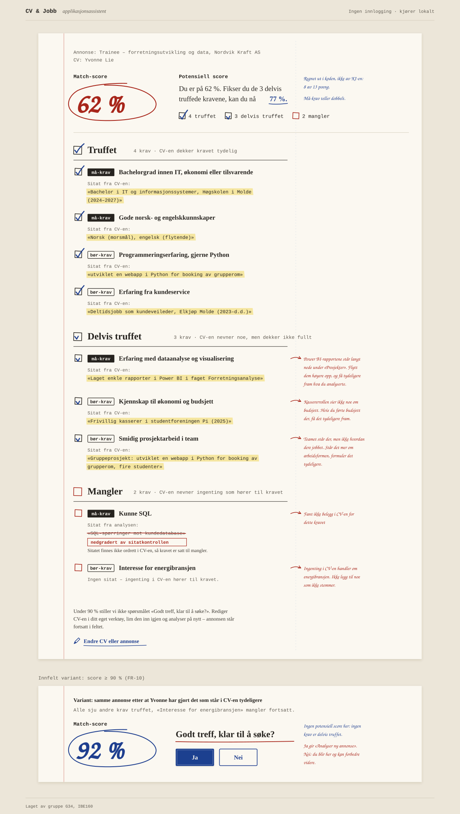
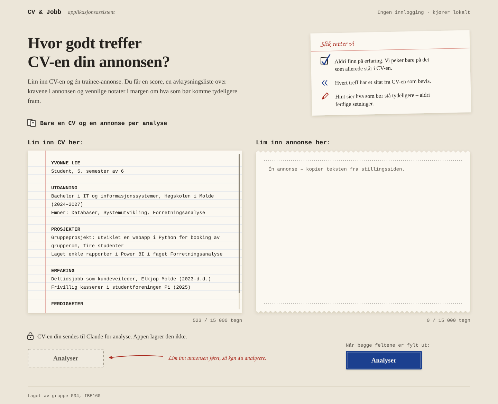
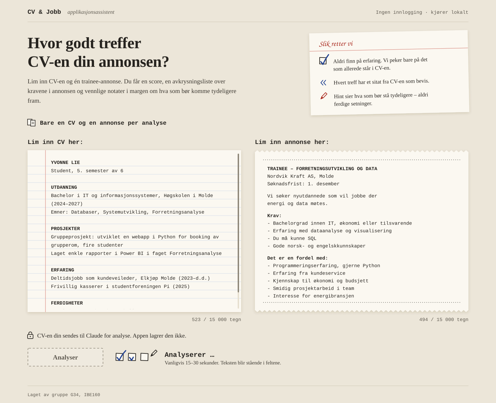
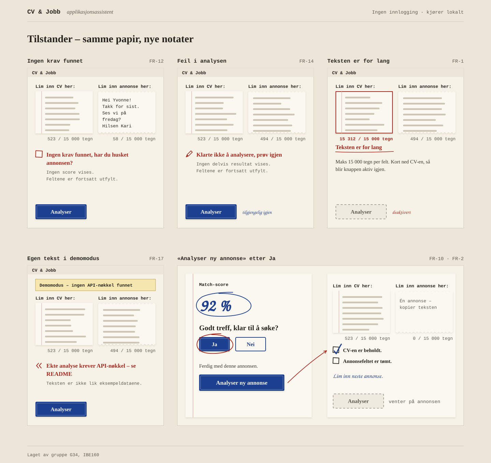
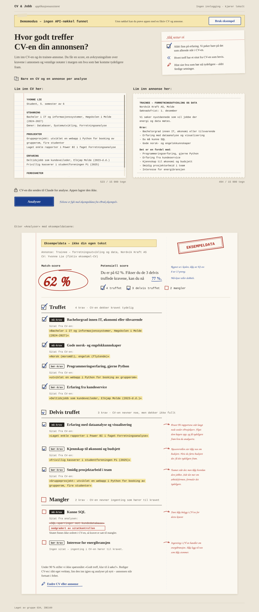
Konsept 04 – Tavle
Konseptbeskrivelse (concept.md)
Konsept 04 – Tavle
Idé
Resultatet legges ut som en tavle med tre kolonner, Truffet | Delvis truffet | Mangler, med ett kort per krav. Må-krav ligger øverst i hver kolonne og har et fylt, svart merke. Bør-krav har et merke med bare omriss. Øverst ligger en scorestripe med match-score, potensiell score og en segmentert bar der hvert segment er ett krav: et må-krav er dobbelt så bredt som et bør-krav, og segmentene står i samme rekkefølge som kortene på tavla. Baren viser altså regnestykket i FR-7 som en figur, ikke bare som et tall.
Palett
#F3EFE6 |#FFFDF8 |#D9D1C1 / #C9BFAC |#1C1E1B |#45483F, #5E6058 |#C2410C (mørk #9A3412, tint #FBE7DC) |#2E6B3F tekst, #3E7F4F bar, #E2EDE3 tint |#8A5500 tekst, #D4951C bar, #F7EACB tint |#565B65, tint #E8E5DF, stiplet omriss |#A8231A på #FBE8E5 |#5C584F på #E3DED3 |#1C1E1B / #34372F, tekst #FFF6E8 |Mangler er bevisst grå og stiplet, ikke rød: et krav som mangler er et faktum om CV-en, ikke en feil brukeren har gjort. Rødt er reservert for systemfeil og «Teksten er for lang». Alle tekstpar er AA (≥ 4,5:1 for brødtekst). Hvit på persimon er ca. 5,2:1.
Typografi
- Grensesnitt:
'Segoe UI Variable Text','Segoe UI',system-ui,…(systemfont, ingen eksterne fonter). - Overskrifter og score:
'Segoe UI Variable Display', 700, stram sporing (−1,2 px på 46 px, −3 px på scoren 84 px). Tabelltall på alle poeng og tellere. - Sitater fra CV-en: serif kursiv (
'Iowan Old Style','Charter','Sitka Text',Georgia). CV-teksten får sin egen «dokumentstemme», slik at et ordrett sitat aldri kan forveksles med appens egen tekst eller hint. - Minste tekst: 13 px.
Layoutprinsipp
Rutenett på 1440 px med 80 px marg og 1280 px innhold. Tavla har tre kolonner på 405 px med 32 px mellomrom. Kolonnene har en 4 px statusstrek øverst, statusnavn med antall og definisjonen fra ordlisten («CV-en dekker kravet tydelig» osv.). Kortene har fast oppbygning: merke og poeng, kravet, sitatfelt (tonet i statusfargen), og forbedringshint. Inputsiden er ett arbeidspanel med to like felt side om side, og hjelpeteksten, personvernvarselet og «Analyser» står i en fast bunnrad. Venstre-til-høyre-lesing på tavla gir rekkefølgen truffet → delvis → mangler (FR-9) uten at brukeren må rulle seg gjennom en lang liste.
Hvorfor konseptet løser funksjonaliteten godt
- FR-9 rekkefølge: kolonnene er rekkefølgen, og innen hver kolonne kommer må før bør. Den positive kolonnen leses først.
- FR-7/FR-8 score: baren gjør poengvektingen synlig (må = 2 enheter, bør = 1). Delvis truffet er halvt fylt, og den skraverte resten *er* den potensielle scoren. Krav som mangler er stiplet og telles ikke med i potensialet, som FR-8 krever. Gruppeklammene under baren viser poeng per kolonne.
- FR-5/FR-11 sitater: alle truffet- og delviskort har «Sitat fra CV-en» ordrett i serif. Kortet som er nedgradert av sitatkontrollen (Power BI) står i Mangler-kolonnen med merket «Nedgradert av sitatkontrollen» og hintet «Fant ikke belegg i CV-en for dette kravet».
- FR-6 hint: alle delvis- og manglerkort har et ikke-tomt hint som peker på eksisterende innhold, eller som sier rett ut at det ikke finnes noe å bygge på.
- FR-10: vises i scorestripen bare ved ≥ 90 % (variant med 92 % i 03). Etter «Ja» kommer «Analyser ny annonse», og i 04 vises det tømte annonsefeltet med CV-en beholdt.
- FR-15/16/17: et skravert, mørkt bånd skiller demo fra ekte bruk både på inputsiden og på resultatsiden («EKSEMPELDATA»), og feltene har merket «Eksempeldata».
- Tilstander (04): FR-12, FR-14, FR-1 (for lang, rød ramme og teller), FR-17 og etter «Ja». Feltene er utfylt i alle feiltilstander.
Svakheter og risiko
- Tre kolonner krever bredde. På smal skjerm må tavla stables, og da forsvinner tavlemetaforen (mobil er ikke krav i v1).
- Ujevn fordeling (for eksempel 8 mangler og 1 truffet) gir én lang kolonne og to nesten tomme. Det kan se skjevt ut, men det er ærlig.
- Kolonnene kan leses som parallelle i stedet for sekvensielle. FR-9 sier «først … så … til slutt». Venstre-til-høyre ivaretar det for norske lesere, men det bør testes i SM-5.
- Den segmenterte baren må forklares (vi har forklaring og tegnforklaring under), ellers kan halvfylte segmenter misforstås.
- Kort med lange sitater gjør kolonnene ujevne i høyde.
Score-regnestykket
Eksempel (Yvonne mot «Trainee – digitalisering, Nordvik Kraft AS»), 9 krav:
- Match-score = 7 ÷ 13 × 100 = 53,85 → 54 %
- Potensiell score (delvis → truffet: +1 + 0,5 + 0,5) = 9 ÷ 13 × 100 = 69,23 → 69 %
- Variant etter redigert CV: alt truffet unntatt Power BI = 12 ÷ 13 × 100 = 92,31 → 92 % ≥ 90 → «Godt treff, klar til å søke?». Ingen delvis truffede krav, så ingen potensiell score.
- Demo (Sindre Lund mot «Trainee – økonomi, Fjellstad kommune»): må 2 + 2 + 1 (delvis), bør 1 + 0,5 (delvis) + 0 (mangler) = 6,5 ÷ 9 = 72,2 → 72 %. Potensiell score: 8 ÷ 9 = 88,9 → 89 %.
Alle sitater finnes ordrett i CV-utdraget i feltet (01/02/05).
Impeccable-prinsipper brukt
- Modus: Operate (resultatsiden er et verktøy). Presisjon og ro framfor effekter. Kjente mønstre (kolonnetavle, tekstfelt) får stå, og identiteten ligger i detaljene: persimon-aksenten, papirtonene, merket med tre søyler og serifsitatene.
- Ingen eyebrows/kickers over overskrifter, ingen seksjonsnumre, ingen gradienttekst, ingen fargede venstrekanter på kort, ingen glass og ingen hard offset-skygge. Bare myk skygge med forskyvning.
- Unngår «hero-metric»-malen: scoren står sammen med regnestykket (baren og poengene), ikke som et dekorativt nøkkeltall.
- Egne tegnede ikoner med lik strek (hake, halvfylt, stiplet sirkel, lås, skjold), ingen emoji.
- Statusfarger er ikke den eneste koden: hver status har også egen ikonform og eget mønster (fylt / halvt / stiplet), og må/bør skilles ved fylt eller omriss.
- Lys tema er valgt ut fra bruken (student ved PC på dagtid, lesing av mye tekst). Tilstandene (deaktivert, venter, tom, feil, for lang) er alle tegnet.
- Avvik fra skillen:
impeccable context-launcheren ble ikke kjørt (laster ned binær, og init/PRODUCT.md skulle hoppes over). Craft-floor-regelen om selvhostet displayfont er overstyrt av oppdraget, som krever systemfonter.
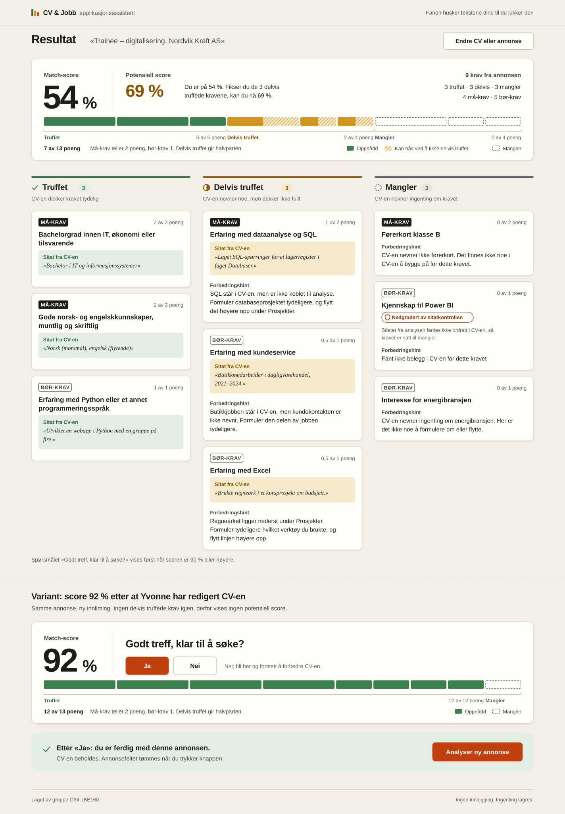
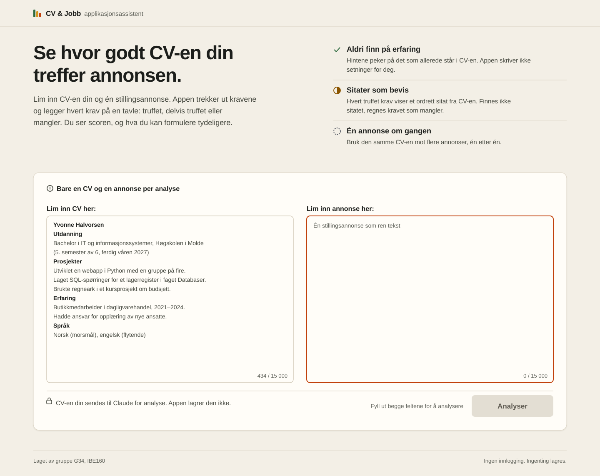
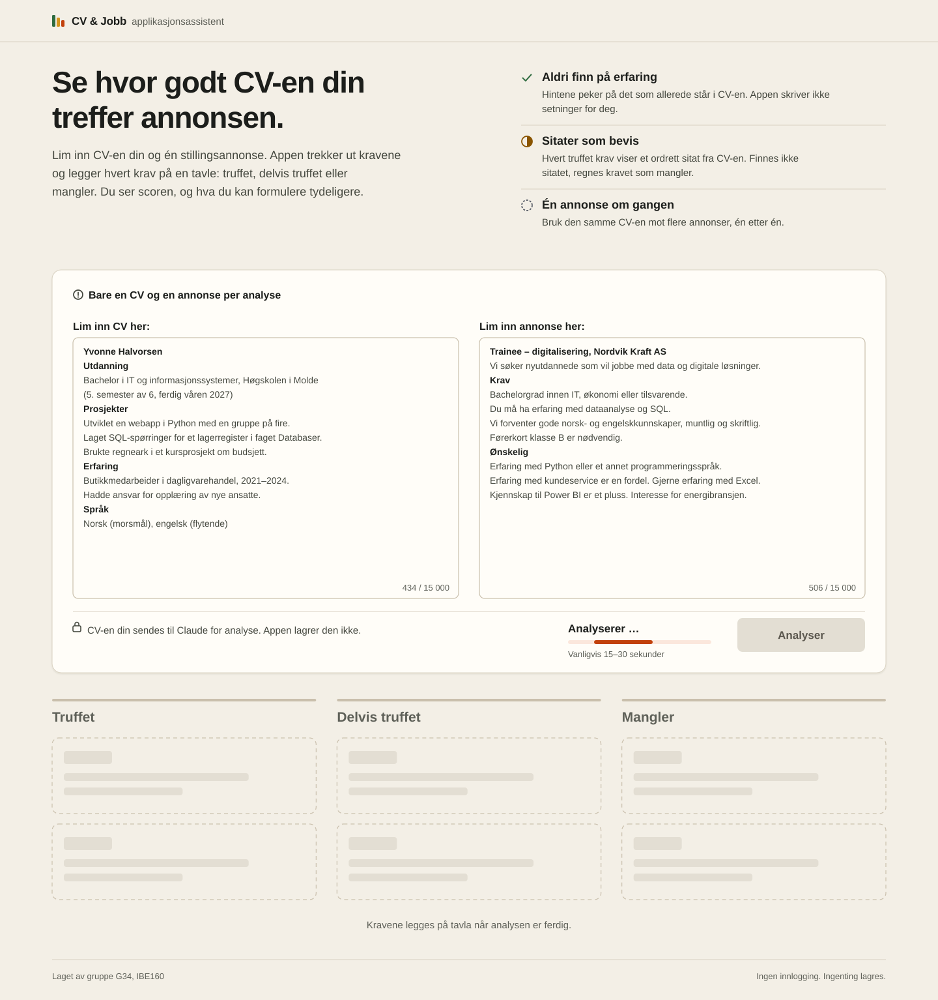
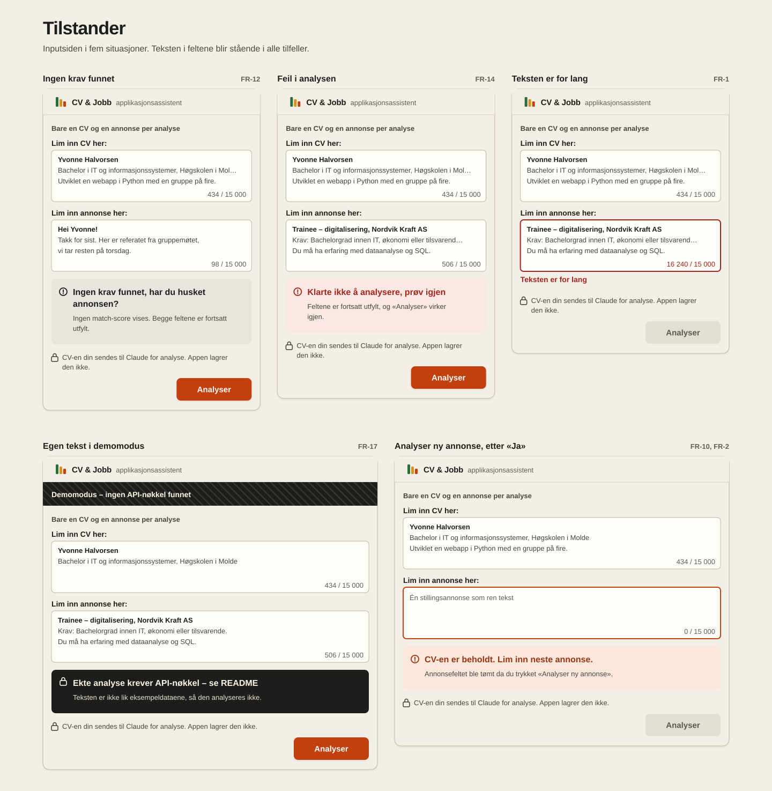
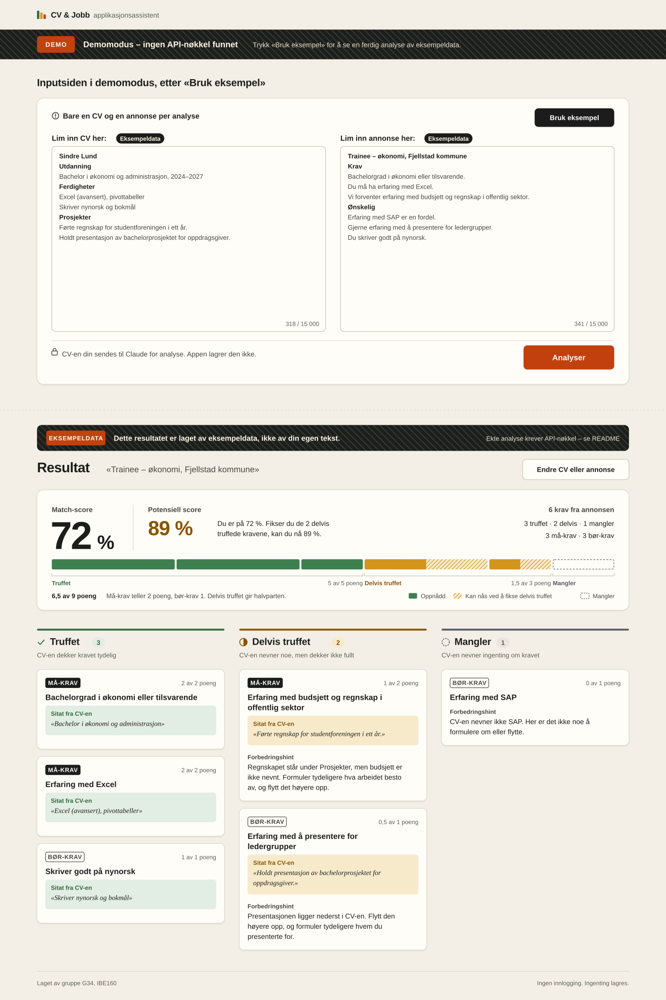
Konsept 05: Debrief-samtale
Konseptbeskrivelse (concept.md)
Konsept 05: Debrief-samtale
Idé
Resultatet leses som en rolig debrief fra en veileder. Korte meldingsbobler går gjennom analysen i en fast rekkefølge: først scoren, så det som er bra, så det som kan bli bedre, og til slutt det som mangler. Hvert krav er et kompakt kort inni samtalen, med status, må/bør-merke, ordrett sitat og forbedringshint. Det er ingen chat og ikke noe innskrivingsfelt. Brukeren svarer bare med handlingsknapper («Ja», «Nei», «Endre tekstene og analyser på nytt», «Analyser ny annonse»).
Filer
01-landingsside.svg: landingssiden er inputsiden. Overskrift til venstre, veilederens intro i tre bobler til høyre («aldri finn på erfaring», sitater som bevis), deretter de to feltene, hjelpeteksten, personvernvarselet og «Analyser» i aktiv tilstand, med en liten forklaring av deaktivert tilstand. Avsenderblokken ligger i bunnteksten.02-analyserer.svg: en ny boble med «Analyserer …» og tre prikker. Feltene er fortsatt utfylt, men dempet, og «Analyser» er deaktivert.03-resultat-debrief.svg(1440 × 4089): hele debriefen med kapittelskinne til venstre og varianten med score på minst 90 % nederst («Godt treff, klar til å søke?» med Ja/Nei).04-tilstander.svg: Ingen krav funnet, Feil, Teksten er for lang, Egen tekst i demomodus, «Analyser ny annonse» etter Ja, og tomt felt der «Analyser» er deaktivert.05-demomodus.svg: inputsiden med demobanner og «Bruk eksempel», og resultatsiden merket med «Eksempeldata».
Palett
#F4EFE6 |#FFFDF9 / #FFFFFF |#1E2629 |#535C5B (6,1:1 mot bakgrunnen) |#D8CFBF |#1D5C57 (hvit tekst 7,6:1) |#2D6A38 på tint #E2EDDD |#7A5200 på tint #F5E8C8 |#9A3426 på tint #F4E0DA |#6A6358 på #E2DCD1 |#4B4790 |Status skilles aldri bare med farge. Hver status har sitt eget ikon (fylt hake, halvfylt sirkel, stiplet sirkel med strek) og sitt eget ord. Må-krav vises som fylt mørk merkelapp og bør-krav som omrisset merkelapp.
Typografi
- Veilederens stemme: serif (
Charter, 'Sitka Text', Cambria, Georgia, serif), 18–19 px i bobler, 20 px på kravtitler, 72 px på scoren. Serif gir den rolige, menneskelige tonen. - Grensesnitt: systemsans (
'Segoe UI Variable Text', 'Segoe UI', system-ui, …), 13–18 px til etiketter, felt, hint og knapper. - Sitater: serif kursiv 17 px i tonet blokk, med norske anførselstegn « ».
- Minste tekst er 13 px.
Layoutprinsipp
En smal samtalekolonne på 720 px (x 408–1128), med veilederens avatar til venstre og brukerens valg høyrejustert, slik et svar i en samtale ville stått. Til venstre går en tynn kapittelskinne (Resultat → Bra · 4 krav → Kan bli bedre · 2 → Mangler · 2 → Videre), som viser hvor langt i gjennomgangen man er. Høyre marg brukes bare til skissenotater. Det er ikke noe rutenett av kort og ingen KPI-rad: alt leses ovenfra og ned som en fortelling.
Hvordan konseptet løser funksjonaliteten
- FR-9 rekkefølge: samtaleformen gjør rekkefølgen truffet → delvis → mangler naturlig, fordi en veileder starter med det positive (PRD-antakelsen i FR-9). Innen hvert kapittel kommer må-krav før bør-krav.
- FR-7/FR-8: scoren står i første melding både som tall og som setning med eksakt formulering («Du er på 71 %. Fikser du de 2 delvis truffede kravene, kan du nå 83 %.»). En skala viser 90 %-grensen. Når det ikke finnes delvis truffede krav, vises ingen potensiell score.
- FR-5/FR-6/FR-11: sitatet står i en egen tonet blokk med etiketten «Sitat fra CV-en din», og hintet har en egen etikett. Kravet som sitatkontrollen har nedgradert, har en stiplet boks («Nedgradert av sitatkontrollen») og hintet «Fant ikke belegg i CV-en for dette kravet». Veilederen sier rett ut: «Jeg foreslår aldri at du legger til erfaring du ikke har.»
- FR-10: spørsmålet er en egen, fremhevet boble med Ja/Nei. Etter Ja kommer «Analyser ny annonse», og annonsefeltet tømmes mens CV-en beholdes (04).
- FR-12/14/17: feil- og tomtilstandene vises i samme boble-språk, så brukeren aldri møter en annen «stemme» enn veilederen. Feil får ikon og rød tint.
- FR-15/16: demobanneret er mørkt og står over alt annet, og resultatet har en fast oker-stripe med «Eksempeldata», som også gjentas i første melding.
Svakheter og risiko
- Siden blir lang (cirka 4 100 px for 8 krav). Kapittelskinnen hjelper, men med mange krav kan det bli mye scrolling. Vurder å la truffede kort være sammenfoldet.
- Samtaleformen kan gi forventning om at man kan skrive spørsmål. Det løses ved å ikke ha noe innskrivingsfelt og bare høyrejusterte valgknapper, men det bør testes i SM-5.
- Det er en risiko for at veilederens fyllsetninger fortrenger innhold. Boblene må holdes på én til tre linjer.
- Bobler med animasjon («skriver …») kan bli treige hvis de spilles av én for én. Hele resultatet bør vises med en gang.
Score-regnestykket (FR-7, må 2/1/0, bør 1/0,5/0)
Hovedanalyse: Yvonne mot «Trainee IT og digitalisering», Nordvik Energi
- Match-score: 8,5 ÷ 12 × 100 = 70,83 → 71 %
- Potensiell score (de 2 delvis truffede regnes som truffet): (8,5 + 1 + 0,5) = 10 ÷ 12 × 100 = 83,33 → 83 %
- Uten nedgraderingen ville Scrum gitt 0,5 og 9 ÷ 12 = 75 %. Scoren beregnes etter sitatkontrollen.
- Sitatkontroll: alle viste sitater («Bachelor i IT og informasjonssystemer», «utviklet en webapp i Python og Flask», «Norsk (morsmål), engelsk (flytende)», «kundeservice og opplæring av nyansatte», «SQL (grunnleggende)», «Valgfag: Energi og bærekraft») finnes ordrett i CV-utdraget. Det avviste sitatet «jobbet etter Scrum i bachelorprosjektet» finnes ikke.
Variant med score på minst 90 %: samme CV mot «Trainee digital forvaltning», Fjordby kommune (fiktiv)
5 må-krav truffet (5 × 2 = 10), 2 bør-krav truffet (2), 1 bør-krav mangler (0) → 12 ÷ 13 × 100 = 92,31 → 92 %. Det finnes ingen delvis truffede krav, derfor vises ingen potensiell score. 92 ≥ 90, så «Godt treff, klar til å søke?» vises.
Demomodus: eksempeldata, Mina Haugen mot «Trainee økonomi og analyse», Havbris AS (fiktiv)
- Match-score: 5,5 ÷ 7 × 100 = 78,57 → 79 %. Potensiell score: 6 ÷ 7 × 100 = 85,71 → 86 %.
Impeccable-prinsipper som ble brukt
- Modus: inputsiden og resultatsiden er Operate/Read, så ambisjonen ligger i presisjon og ro, ikke i effekter. Lys tema er valgt ut fra bruken: en student ved PC-en i dagslys.
- Avviste standardvalg: ingen hero-metric-mal med KPI-rad (scoren står i en setning), ingen like kort i rutenett som sidestruktur, ingen eyebrow eller kicker over overskrifter, ingen gradienttekst, ingen glass, ingen farget kantlinje til venstre på kortene (statusen bæres av ikon, ord og tonet sitatblokk), og ingen emoji som ikoner (alle ikonene er tegnet SVG med lik strek).
- Dybde: myke skygger med forskyvning og uskarphet (dy 2–6, blur 3–10), aldri harde blokkskygger.
- Kontrast: all brødtekst ≥ 4,5:1, og sekundærtekst er tonet fra blekket, ikke nøytral grå.
- Tilstander: aktiv, deaktivert, laster, feil, tom og for lang er tegnet eksplisitt.
- Copy: knappene sier hva de gjør, og feilmeldingene bruker PRD-ens eksakte tekst.
- Avvik: Impeccable-launcheren meldte at PRODUCT.md mangler. Init og spørsmål ble hoppet over etter oppdraget, og retningen er utledet fra PRD-en. Craft-floor anbefaler en egen, selvhostet display-font, men briefen krever systemfonter, så briefen vinner, jf. «The brief wins».
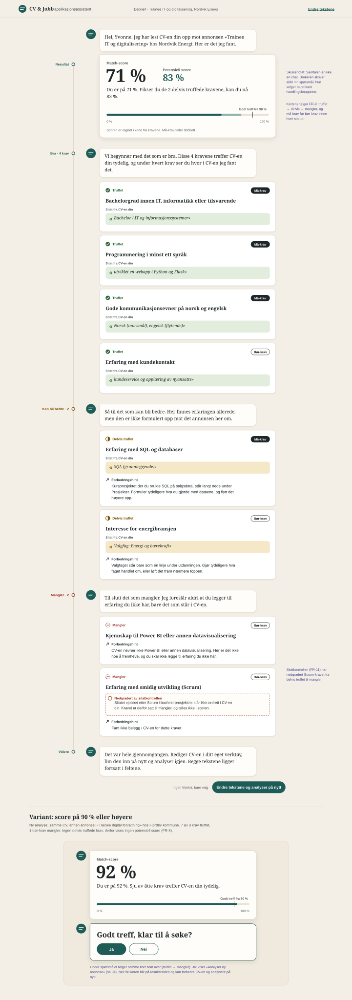
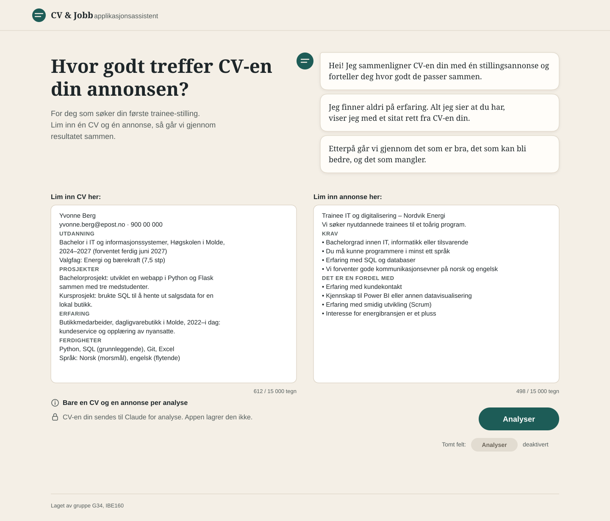
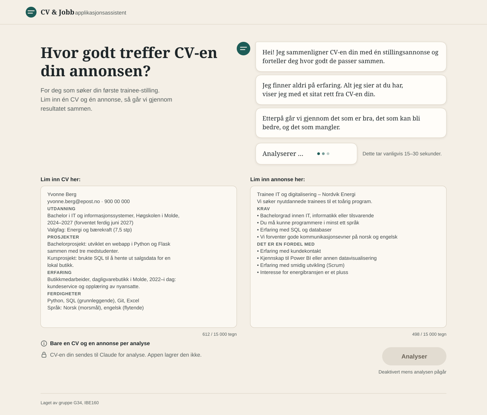
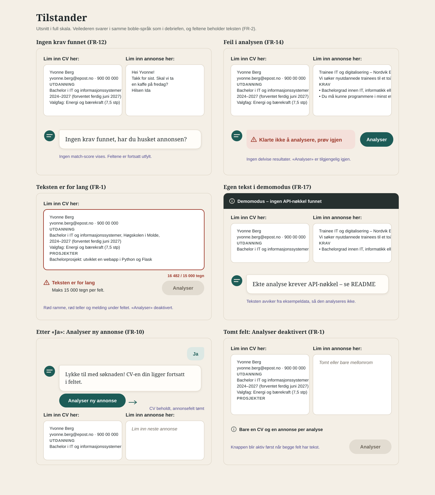
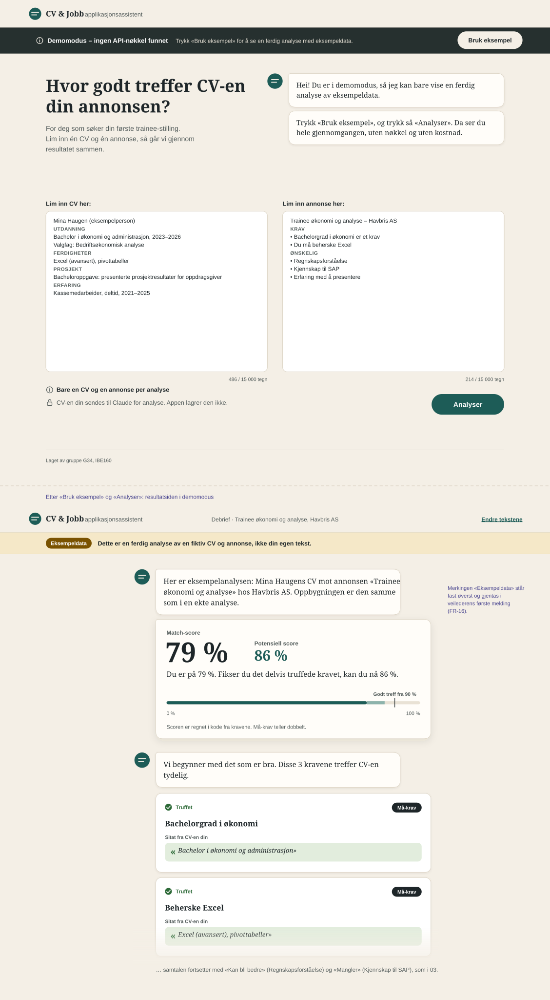
Konsept 06: Typografisk / sveitsisk brutal
Konseptbeskrivelse (concept.md)
Konsept 06: Typografisk / sveitsisk brutal
Idé
Resultatet skal leses som en eksamenskarakter: ett enormt tall (360 px) øverst og en nummerert kravtabell under, uten pynt. Siden er bygd av svart tekst, hvite flater og streker. Rødt brukes bare der noe krever handling eller stopper deg: «Analyser», «Mangler», sitatkontrollen og 90 %-grensen. Ærligheten ligger i strukturen: hvert treff har sitatet sitt i monospace i samme rad, så beviset står rett ved påstanden.
Palett
#0A0A0A | 19,8:1 |#FFFFFF | – |#D6001C | 5,6:1 (hvit tekst på rød: 5,6:1) |#595959 | 7,0:1 |#EDEDED (tekst #595959, 5,9:1) | – |Typografi
- Sans (alt UI og scoren):
'Helvetica Neue', Helvetica, Arial, 'Liberation Sans', sans-serif. Scoren er 360 px bold med -18 tracking (cirka -0,05 em). Overskrifter er 40–76 px bold med negativ tracking, brødtekst 15–17 px. - Mono (bare data: CV-tekst i feltene, sitater, tegnteller, regnestykket, radnumre):
'SF Mono', Menlo, Consolas, 'Liberation Mono', monospace. Monospace betyr at teksten er «ordrett fra CV-en», ikke at noe er «teknisk». - Minste tekst er 13 px.
Layoutprinsipp
- Artboard 1440 px, marger på 80 px, 1280 px innhold i 12 kolonner (88 px kolonne, 20 px gutter). Feltene ligger på 6+6 kolonner. Scoren tar kolonne 1–6, og forklaringen tar kolonne 7–12.
- Kravtabellen har kolonnene Nr | Status | Type | Krav | Sitat | Forbedringshint. Statusgruppene skilles med fulle svarte bånd (rødt bånd for Mangler), radene med 1 px streker og tabellen med 3 px topp- og bunnstrek.
- Ingen skygger, ingen avrundede hjørner, ingen kort. Status vises med en tegnet firkant (fylt / halvfylt / rød kontur) og ord, så fargen aldri er eneste bærer. MÅ er et fylt merke og BØR et merke med kontur.
- Scoreskalaen 0–100 har svart fyll opp til match-scoren, skravering opp til potensiell score og en rød strek ved 90 %. Den viser hvor langt det er til «Godt treff», uten en dekorativ måler.
- Meldinger (FR-12, FR-14, FR-1, FR-17) står alltid på samme sted, over «Analyser», med en rød strek foran.
Hvordan konseptet løser funksjonaliteten
- FR-1/FR-3: Feltetikettene, hjelpeteksten og personvernvarselet står ordrett. Tegntelleren «x / 15 000 tegn» i hvert felt gjør grensen synlig før den brytes. Deaktivert «Analyser» er grå med en diagonal strek, og aktiv er rød. På 01 er CV-en limt inn og annonsefeltet tomt, så knappen er deaktivert.
- FR-7/FR-8/FR-9: Scoren står øverst, med regnestykket (
7,5 av 13 poeng × 100 = 58 %) rett ved siden av. Potensiell score står med PRD-ens setningsmønster. Tabellen er sortert truffet → delvis → mangler, med må før bør. Alle delvis- og mangler-rader har hint. - FR-11: Rad 07 viser det avviste sitatet gjennomstreket, med merket «Nedgradert av sitatkontrollen» og hintet «Fant ikke belegg i CV-en for dette kravet». Kontrollen blir dermed synlig og troverdig.
- FR-10: Spørsmålet vises ikke under 90 % (det står en merknad om det). Varianten på 92 % viser «Godt treff, klar til å søke?» med Ja/Nei. 04 viser Ja → «Analyser ny annonse» → annonsefeltet tømt og CV-en beholdt.
- FR-2: Resultatsiden viser at feltene fortsatt er utfylt, og har «Analyser» klar for neste runde.
- FR-13: Et svart statusfelt med «Analyserer …» og «Vanligvis 15–30 sekunder» (§5). Feltene er dempet og knappen låst.
- FR-15/16/17: Et svart demobanner i full bredde, «Bruk eksempel» som knapp med kontur, og et rødt merke «Eksempeldata – fiktiv CV og annonse, ikke din egen tekst» øverst og nederst på resultatsiden. Resultatet har samme oppbygning som en ekte analyse.
Svakheter og risiko
- Det store tallet kan føles som en dom. 58 % i 360 px er brutalt for en student som allerede er usikker. Det dempes av at «Truffet» kommer først og at potensiell score står like ved, men det bør testes (SM-5).
- Med Helvetica/Arial som systemfont blir det sveitsiske preget avhengig av hvilke fonter maskinen har. På Windows blir det Arial, som er mindre presist.
- Tabellen med 6 kolonner er tett. Lange krav og hint gir høye rader, og den fungerer ikke på mobil (ikke et krav i v1).
- Tikkstripen i ventetilstanden kan leses som fremdrift. I implementasjonen bør den være en løpende, ubestemt animasjon, ikke en prosent.
- Eksempeldataene i demomodus er de samme fiktive Yvonne-dataene som i UJ-1. I produktet kan det være andre fiktive data.
Score-regnestykket (FR-7, FR-8)
- Match-score: 7,5 ÷ 13 × 100 = 57,69 → 58 %
- Potensiell score (04–06 som truffet): (2+2+1+2+2+1+0+0) = 10 ÷ 13 × 100 = 76,92 → 77 %
- Variant etter revidert CV (Yvonne har formulert om eksisterende innhold, slik at 04, 05, 06 og 07 er truffet med sitater som finnes ordrett, og 08 fortsatt mangler): 12 ÷ 13 × 100 = 92,31 → 92 %, altså ≥ 90 %, og spørsmålet vises. Ingen delvis truffede krav, så ingen potensiell score.
Alle sitater i 01–06 finnes ordrett i CV-utdraget i feltet. Sitatet i 07 («Ansvarlig for budsjettet i linjeforeningen») finnes ikke, fordi CV-en sier «Kasserer i linjeforeningen, 2025–2026». Derfor blir kravet nedgradert.
Impeccable-prinsipper brukt
- Skillen ble lastet. Launcheren
impeccable contextble ikke kjørt (den laster ned en binærfil). Det finnes ingen PRODUCT.md eller DESIGN.md. Craft-floor er lest og brukt. - Modus: Operate (inputsiden har en kort Persuade-innledning). Presisjon og tilbakeholdenhet foran uttrykk.
- Briefen vinner: sveitsisk stil med systemfonter er fastsatt i oppdraget. Derfor er Helvetica-stakken brukt bevisst, og det store tallet brukes selv om skillen advarer mot hero-metric-malen. Tallet er her selve produktet.
- Unngått: like kort med ikon og overskrift, eyebrow- og kicker-etiketter, gradienttekst, skygger og glass, farget venstrekant over 1 px på kort (sitatstreken er 2 px i en tabellcelle, og meldingsstreken er et eget element), emoji som ikoner (status er tegnede SVG-firkanter), ringer og sparklines.
- Monospace bare for data (sitater, telling, regnestykke), ikke som kostyme.
- Kontrast ≥ 4,5:1 for all tekst, og sekundærtekst er nøytral
#595959på hvitt. - Tilstander: deaktivert, venting, feil, tom, for lang og demo er tegnet eksplisitt. Kopien bruker produktets egne, ordrette tekster.
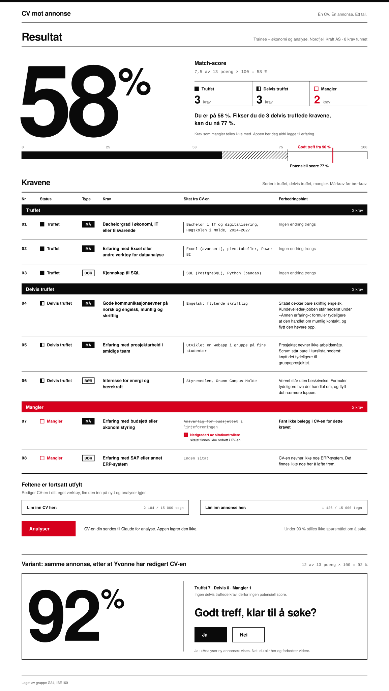
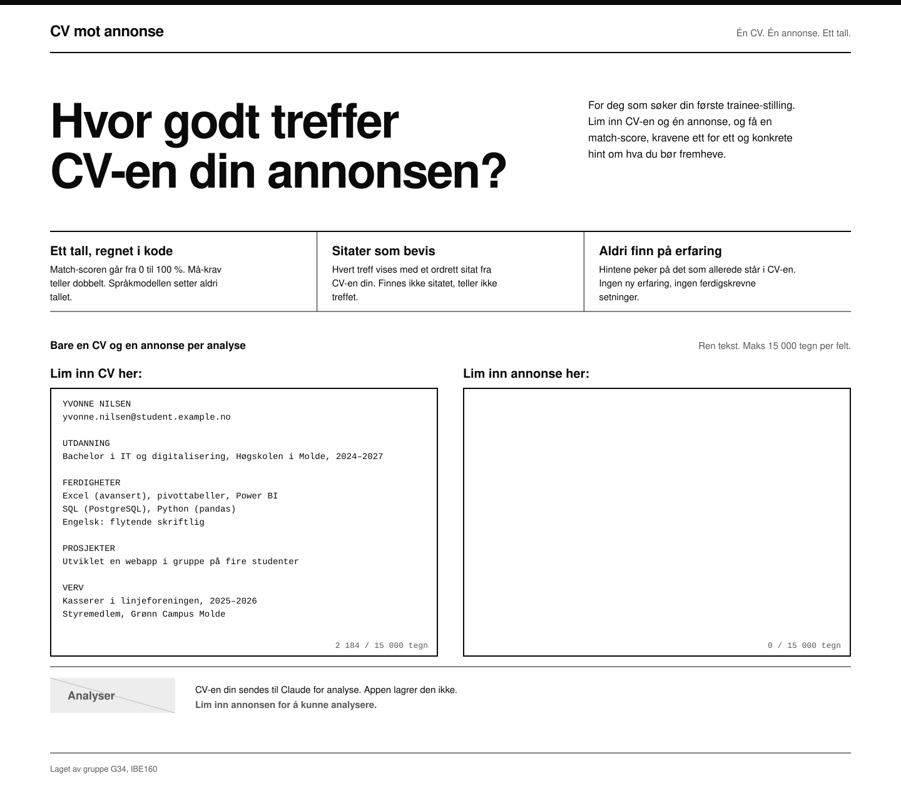
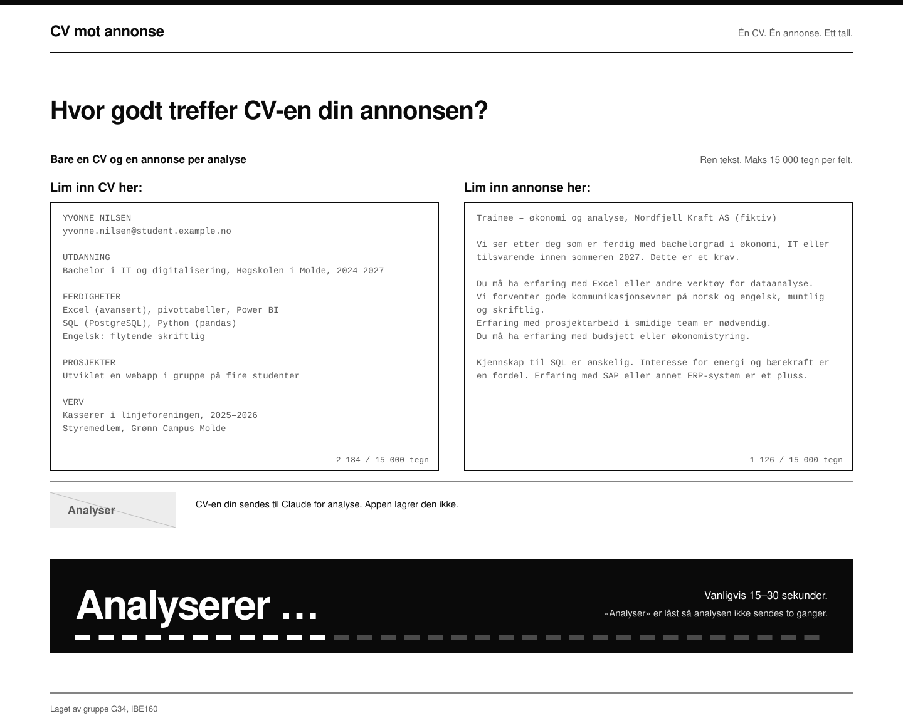
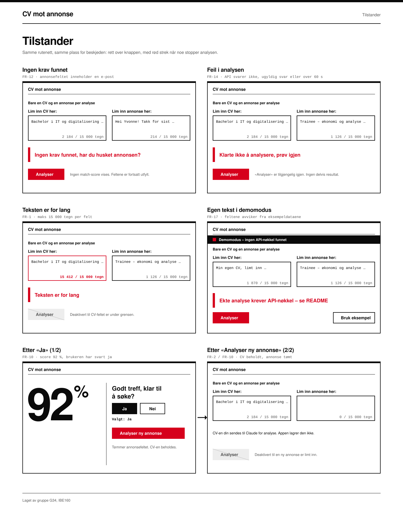
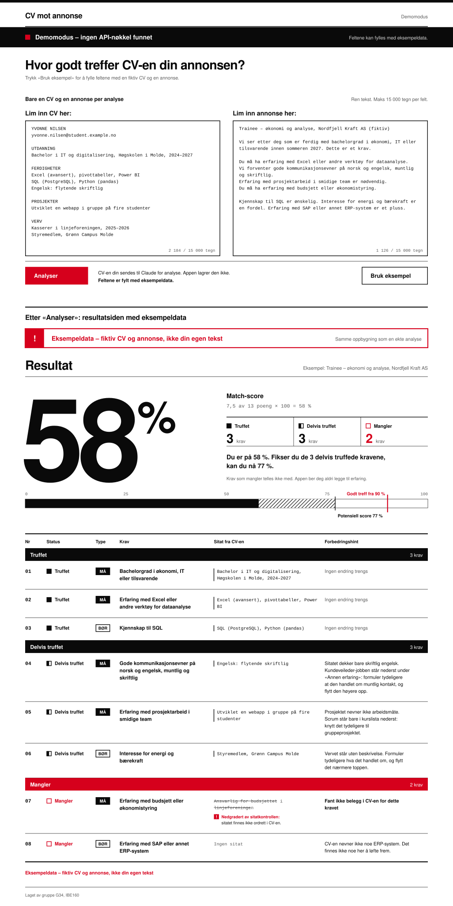
Konsept 07 – Lekent og oppmuntrende («Stien mot flagget»)
Konseptbeskrivelse (concept.md)
Konsept 07 – Lekent og oppmuntrende («Stien mot flagget»)
Idé
Match-scoren er en sti opp et fjell. Studenten står der scoren er («Du er her · 65 %»), og flagget «Godt treff» står ved 90 %. Den potensielle scoren er en stiplet etappe fram til «Neste milepæl». Etappen viser bare det studenten kan nå ved å formulere tydeligere det som allerede står i CV-en, så målet føles innen rekkevidde. Kravene under er etapper i samme univers: truffet, delvis truffet og mangler har hver sin form og farge, og hvert krav har sitat og hint ved siden av seg.
Palett
#FBF4EA |#F4E9DA |#2A2140 |#5E5470 |#DCCFBF |#C2412A / lys #F6D9CF |#1E7366 / lys #DDEFE9 |#F2B33D, tekst #8A5A00 / lys #FCEFD2 |#5B3F86 / lys #EFE8F7 |#CFE4F3, #BFDCC8, #8CC4A2, #5E9F7E |#E6DED3, tekst #645A70 |Kontrasten er kontrollert mot WCAG AA: hvit på korall er ca. 5,3:1, hvit på blågrønn ca. 5,7:1, ravtekst #8A5A00 på papir ca. 5,4:1, plomme på lys plomme ca. 7:1, og sekundærtekst på papir ca. 6,4:1. Mangler er bevisst plomme, ikke rød, så et gap ikke leses som en feil. Rødt (korall) brukes bare til handlinger og ekte feilmeldinger.
Typografi
Bare systemfonter (SVG-kravet): Segoe UI Variable Display / Segoe UI / system-ui / Helvetica Neue / Arial. Overskrifter er 800 med litt negativ sporing (54 px på inputsiden, 88 px for scoren), krav har 20 px / 700, og brødtekst er 15–17 px / 400. Små merker er 13 px, som også er minste tekst. Tall bruker tabulære sifre.
Layoutprinsipp
Innholdet ligger i en 1120 px bred kolonne (x 160–1280) på en 1440 px flate, og store, avrundede flater (radius 22–48) bærer illustrasjonen og feltene. Resultatsiden er en reise ovenfra og ned: fjellet med scoren, en linje med opptelling og regneregel, og deretter etappene «Truffet», «Delvis truffet» og «Mangler». Hvert krav er en tokolonners rad med kravet og typen til venstre og bevis (sitat) og hint til høyre, ikke et rutenett av like kort. Ingen sidefelt, KPI-fliser eller diagrammer, så siden ser ikke ut som et dashbord.
Hvordan konseptet løser funksjonaliteten
- FR-1/3: De eksakte etikettene står over feltene, og hver av dem har en tegnteller «x / 15 000 tegn». Hjelpeteksten og personvernvarselet står ved knappen, så de leses rett før «Analyser». Både aktiv og deaktivert knapp er vist og forklart.
- FR-2: Feltene er fortsatt utfylt i ventetilstanden og i alle feiltilstandene. Etter «Ja» og «Analyser ny annonse» er bare annonsefeltet tømt (04).
- FR-7/8: Scoren er stort tall pluss «8,5 av 13 mulige poeng», og regneregelen står på én linje. Den potensielle scoren er formulert som i PRD-eksempelet og vises på stien som «Neste milepæl». Varianten med 90 % viser at den potensielle scoren skjules når ingen krav er delvis truffet.
- FR-9: Kravene er sortert truffet → delvis → mangler, med må-krav før bør-krav innen hver status. Må-krav har et mørkt merke og bør-krav et omrisset merke, så typen ikke bare skilles på farge. Statusikonene har ulik form: hel sirkel med hake, halv sirkel og stiplet sirkel.
- FR-10: «Godt treff, klar til å søke?» med Ja/Nei vises bare i 90 %-varianten. Hovedresultatet sier eksplisitt at spørsmålet ikke vises ved 65 %.
- FR-11: «Grunnleggende SQL» er merket «Nedgradert av sitatkontrollen». Det foreslåtte sitatet står gjennomstreket, og hintet er «Fant ikke belegg i CV-en for dette kravet».
- FR-12/13/14/15/16/17: Tilstandsarket (04) og demofilen (05) dekker disse. Eksempelresultatet er merket med et mørkt bånd øverst og nederst og med «Eksempelannonse» i overskriften.
Score-regnestykke (FR-7 / FR-8)
Hovedresultat – Yvonne mot «Trainee IT og digitalisering – Havlys Energi AS» (8 krav: 5 må, 3 bør)
Maks = 5 × 2 + 3 × 1 = 13. Oppnådd = 8,5. Score = 8,5 / 13 × 100 = 65,38 → 65 %.
Potensiell: de to delvis truffede kravene blir truffet (+1 og +0,5), så 10 / 13 × 100 = 76,92 → 77 %. Kravene som mangler, telles ikke.
Variant ≥ 90 % – samme CV mot «Trainee IT-støtte – Kystby kommune»: 4 må-krav truffet (8) + 1 bør-krav truffet (1) + 1 bør-krav mangler (0) = 9 / 10 = 90 %. Ingen krav er delvis truffet, så ingen potensiell score vises.
Demomodus – Sara Lien mot «Trainee økonomi – Brattli Bygg AS»: må: truffet 2, delvis 1, mangler 0. Bør: truffet 1, delvis 0,5, mangler 0. Til sammen 4,5 / 9 = 50 %. Potensiell: 6 / 9 = 66,67 → 67 %.
Alle sitatene finnes ordrett i CV-utdragene som står i feltene.
Svakheter og risiko
- Fjell og sti kan oppleves som spillifisering. Det dempes ved at tallene alltid står i klartekst og at det ikke finnes poengjakt, merker eller animasjoner som belønner, men grensen bør testes med brukere (SM-5).
- Stien har ikke lineær skala (lengde langs en kurve), så 25/50/75-milepælene er nødvendige for å lese den riktig. Den er en illustrasjon av tallet, ikke en erstatning for det.
- Illustrasjonen krever SVG-arbeid i implementasjonen, og må skaleres til smalere vinduer selv om mobil ikke er et krav.
- Systemfonter gir mindre karakter enn en egen rund display-font. Det er valgt fordi SVG-ene skal være selvstendige.
- Resultatsiden blir lang med mange krav. Opptellingslinjen øverst gir oversikten.
Impeccable-prinsipper som er brukt
- Skillen er lastet, men oppstartsskriptet (
impeccable context) ble ikke kjørt, fordi det kan laste ned en binærfil og oppdraget forbyr installasjon. Det finnes ingen PRODUCT.md/DESIGN.md. Craft-floor er lest og fulgt. - Modus: Inputsiden er Persuade light, med tydelig løfte og illustrasjon. Resultatsiden er Operate, der skanbarhet går foran uttrykk.
- Fravalg: ingen eyebrow/kicker over overskrifter, ingen hero-metric-mal med KPI-fliser, ingen like kort med ikon + overskrift som sidestruktur, ingen nestede kort, ingen gradienttekst, ingen fargede venstrekanter, ingen glass/blur og ingen emoji-ikoner. Alle ikonene er egentegnet med samme strektykkelse.
- Farge og kontrast: AA er kontrollert, og sekundærtekst på farget flate er tonet fra flatens kulør, ikke grå. Status skilles med både form og farge.
- Dybde: myke skygger med forskyvning og blur, ingen harde blokkskygger.
- Tilstander: aktiv, deaktivert, venting, feil, tom, for lang og demo er alle tegnet, med produktets egne ord.
- Avvik fra craft-floor: regelen om å ikke bruke systemfont som display-stemme er bevisst brutt, fordi oppdraget krever systemfonter (briefen vinner).
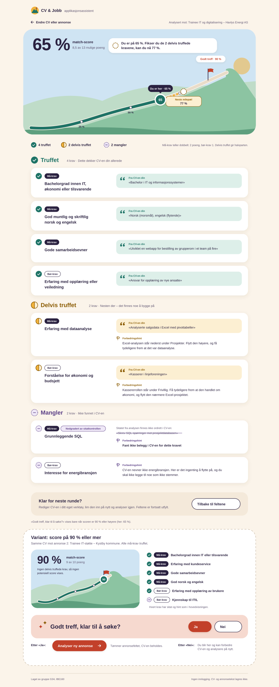
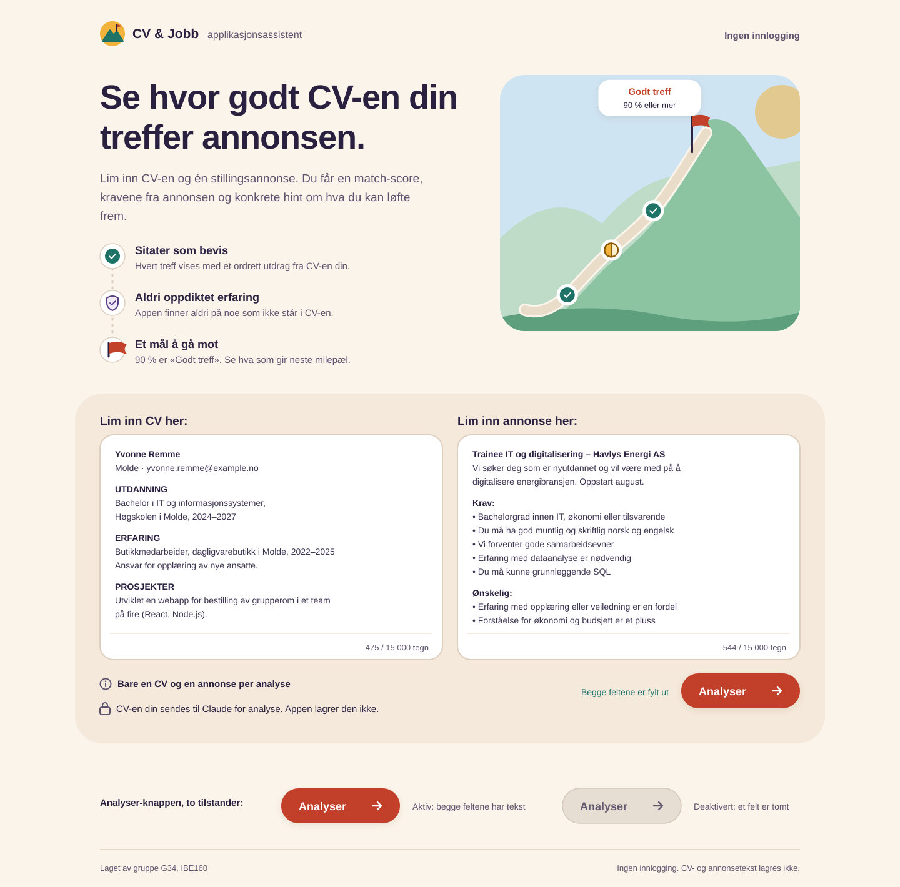
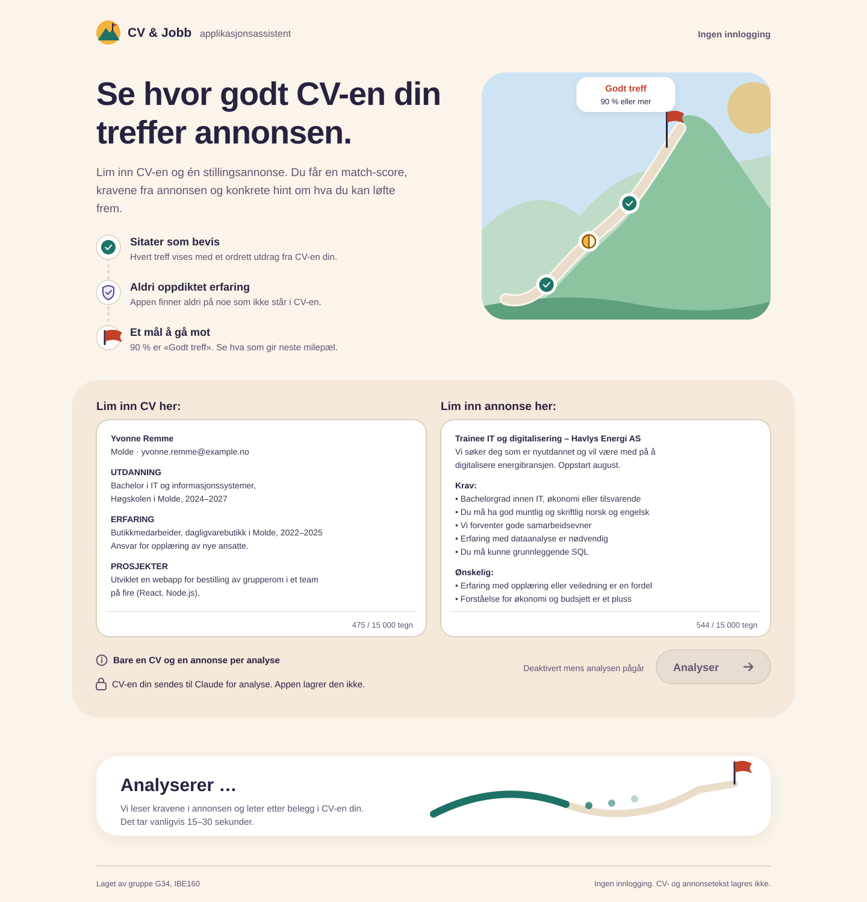
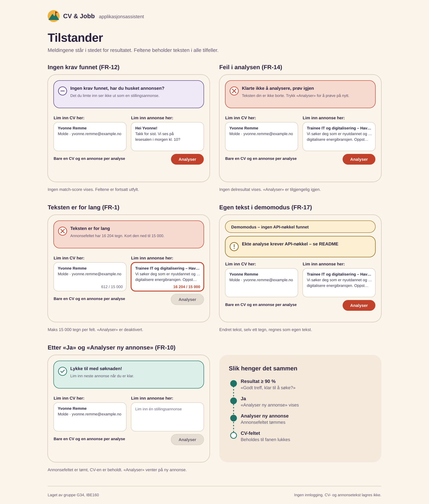
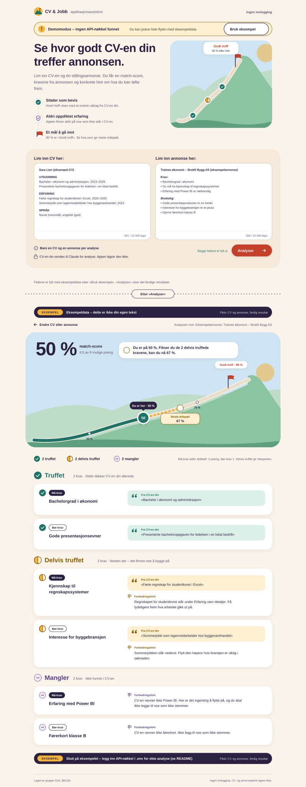
Konsept 08: Markert annonse
Konseptbeskrivelse (concept.md)
Konsept 08: Markert annonse
Idé
Resultatsiden viser selve annonseteksten, og kravene er markert direkte i den med tusj i tre statusfarger. Må-krav har i tillegg en tykk blekkstrek under. I margen ved siden av hver markering står status, må/bør-merke, sitatet fra CV-en og forbedringshintet, som merknader i et gjennomlest manus. Brukeren leser annonsen «med røntgenblikk». En klebrig sidekolonne har scoren og sammendraget sortert truffet → delvis → mangler, og må før bør. Nummeret på hvert krav viser plassen det har i den sorteringen.
Palett
#FBF8F1 |#FFFFFF |#1F1B16 |#5E574D |#D9D1C3 |#8A8172 |#BFE3B4 / #1E5B33 |#FFE08A / #D9A520 / #7A4E00 |#F9DCDC / #9E2A2B |#E7E1D6 med tekst #5E574D |Status vises aldri med farge alene. Truffet = hel tusjflate, et fylt sirkelikon med hake og ordet «Truffet». Delvis = skrå skravur, et halvfylt sirkelikon og ordet «Delvis truffet». Mangler = stiplet ramme uten tusj, et stiplet sirkelikon med strek og ordet «Mangler». Må-krav har en tykk strek under og det fylte merket «MÅ-KRAV». Bør-krav har merket «BØR-KRAV» med bare kontur. All tekst står i blekk på lys tusj. Statusblekket har kontrast på 6,5–7:1 mot papiret.
Typografi
- Annonsen, overskriftene og sitatene er satt i en redaksjonell serif:
Charter, 'Iowan Old Style', 'Sitka Text', Georgia, serif. Sitatene står i kursiv mellom «». - Grensesnittet, merknadene og hintene bruker systemets sans-serif:
'Segoe UI', system-ui, …. - Skala: 46–52 for scoreoverskriften, 30 for annonsetittelen, 18 for annonseteksten, 15–16 for merknadene og 13 som minimum.
Layoutprinsipp
Artboardet er 1440 px bredt med 64 px marg. Resultatsiden har tre spalter: annonseark (620 px), margmerknader (340 px) og en klebrig sidekolonne (272 px). Hvert krav i annonsen ligger på en egen rad, og raden går på tvers av arket og margen med en hårstrek. En prikket lederlinje går fra markeringen til merknaden. Scoren står øverst som en setning: «CV-en din treffer 65 % av annonsen.» Rett under står den potensielle scoren, med setningen fra FR-8. Inputsiden har presentasjonen til venstre og to felt side om side til høyre.
Hvorfor dette løser funksjonaliteten
- Sporbarhet (FR-5, FR-11, SM-1): Brukeren ser hvilken setning i annonsen som ble tolket som krav, og hvilket ordrett CV-sitat som svarer på den. Sitatkontrollen vises åpent: krav 8 hadde et sitat som ikke fantes i CV-en («Ledet et utviklingsteam på 4 personer»). Kravet står derfor som mangler, med hintet «Fant ikke belegg i CV-en for dette kravet».
- Må/bør (FR-4): Signalordene («krav», «må», «vi forventer», «et pluss», «gjerne») står synlige rett ved markeringen. Dermed kan brukeren selv kontrollere typen. Det umerkede kravet (førerkort) er forklart som bør-krav.
- Rekkefølge (FR-9): Sidekolonnen viser hele kravlisten i riktig rekkefølge og følger med når brukeren ruller. Kravnumrene 1–9 følger den sorterte rekkefølgen, så tusjmerkene i annonsen viser også rangen.
- Godt treff (FR-10): Varianten på 92 % viser «Godt treff, klar til å søke?» med Ja og Nei, og «Analyser ny annonse» etter Ja. I 04-tilstander er annonsefeltet tømt etterpå, mens CV-en står igjen.
- Tilstander: Inputsiden viser alle feltregler: tegnteller mot 15 000, «Teksten er for lang», og «Analyser» deaktivert når et felt er tomt eller teksten er for lang, med en forklaring ved siden av.
Svakheter og risiko
- Rekkefølgen i hoveddelen. Annonsen står i dokumentrekkefølge, ikke sortert truffet → delvis → mangler. Sorteringen etter FR-9 finnes bare i sidekolonnen. Det må avklares om dette oppfyller FR-9, eller om det trengs en «sortert visning»-bryter.
- Plassering av markeringen. Modellen må returnere hvor i annonseteksten hvert krav står, eller så må appen finne det i etterkant. Det er ekstra arbeid utover PRD-en. Krav som står spredt i flere setninger, eller enten-eller-krav, er vanskelige å markere som én bit.
- Lange annonser gir en lang side, og den klebrige kolonnen må fungere uten mobilvisning (§5 krever ikke mobil).
- Fonter. Systemfontene varierer mellom maskiner. Charter finnes ikke på Windows, så Georgia blir reserven der.
Score-regnestykket (FR-7 og FR-8)
- Match-score: 8,5 ÷ 13 × 100 = 65,38 → 65 %
- Potensiell score: krav 6 og 7 regnes som truffet (+1 og +0,5), og krav som mangler, telles ikke med. Det gir 10 ÷ 13 × 100 = 76,92 → 77 %. Teksten blir: «Du er på 65 %. Fikser du de 2 delvis truffede kravene, kan du nå 77 %.»
- Variant ≥ 90 % (Yvonne har redigert CV-en): krav 6, 7 og 8 er truffet med nye ordrette sitater, og krav 9 mangler fortsatt. Det gir 12 ÷ 13 × 100 = 92,31 → 92 %. Ingen krav er delvis truffet, så potensiell score vises ikke, mens «Godt treff, klar til å søke?» vises.
Alle sitatene finnes ordrett i CV-utdraget i feltet (01/02). Sitatet «Ledet et utviklingsteam på 4 personer» finnes ikke der, og det er derfor kravet ble nedgradert.
Impeccable-prinsipper som er brukt
- Modus Operate/Read: presisjon og ro i stedet for effekter. Merkesystemet er den eneste uttrykksfulle detaljen.
- Ikke farge alene: status vises med både form (flate, skravur, stiplet ramme), ikon og ord.
- Avvist mønster: «hero-metric»-malen og like store kort som sidestruktur. Scoren står som en setning, og kravene er notater i en tekst, ikke kort. Det er ingen etiketter over overskriftene, ingen farget venstrekant, ingen gradienttekst og ingen glass-effekt.
- Tegnede ikoner med lik strek, ikke emoji eller Unicode-glyfer.
- Lys modus valgt ut fra bruken: studenten leser og redigerer tekst ved PC-en, og det redaksjonelle papiret passer til det.
- Avvik: craft-floor ber om en egen hostet skrift som display-stemme. Oppdraget krever systemfonter, så serif-stakken er valgt etter karakter. Init og PRODUCT.md ble hoppet over, slik oppdraget sa.
Konsept 09 – Ett steg om gangen
Konseptbeskrivelse (concept.md)
Konsept 09 – Ett steg om gangen
Idé
En rolig veiviser for en student som er usikker på CV-en sin. Inputen tas i tre tydelige steg (1 CV, 2 Annonse, 3 Analyser), og ferdige steg slås sammen til en kompakt rad med «Endre», slik at bare ett felt krever oppmerksomhet om gangen. Debriefen er en trinnvis gjennomgang: Oversikt (score) → «Dette er bra» → «Dette kan bli tydeligere» → «Dette mangler», med innholdsfortegnelse til venstre og «Vis alt på én side» for den som vil skumme.
Palett
#F3F0E8 |#FCFBF7 |#1E2A2F |#4B575B |#5F686B |#DCD6CA |#2E5A60, tint #DDE7E6 |#3C6547, tint #E2EADF |#7F5B1A, tint #F3E9D3 |#94473A, tint #F2E0DA |#5E4312 på #F3E9D3 |#E2DED4 bg, #5C6062 tekst, stiplet kant |All brødtekst har ≥ 4,5:1 kontrast mot underlaget (sekundærtekst ≈ 7:1, hvit på aksent ≈ 7:1).
Typografi
- Overskrifter, scoren og CV-sitater: serif-stakk
Charter, 'Iowan Old Style', 'Palatino Linotype', Palatino, Georgia, serif. Sitater settes i kursiv serif med «guillemets», så CV-ens egne ord skiller seg tydelig fra appens tekst. - Grensesnitt og brødtekst:
'Segoe UI', 'Helvetica Neue', Helvetica, Arial, sans-serif. - Skala: 96 / 44 / 34 / 26 / 20 / 17–19 / 15–16 / 13 px. Ingen tekst under 13 px.
Layoutprinsipp
Sentrert enkeltkolonne på 640 px (x 400–1040) på et 1440-artboard. Innholdsfortegnelsen for debriefen ligger i en smal venstrespalte (x 120–340). Stegindikatoren står sentrert over panelet. Knapper og rader er 52–68 px høye og går over hele kolonnebredden. Kravene skilles med tynne linjer, ikke kort i kort. Signaturgrepet er poengstripen: hvert krav er én bit, må-krav dobbelt så brede som bør-krav, fylt etter status. Stripen viser både scoren og hvordan den regnes ut.
Hvordan konseptet løser funksjonaliteten
- FR-1 / FR-3: feltetikettene «Lim inn CV her:» og «Lim inn annonse her:», hjelpeteksten og personvernvarselet står rett over «Analyser». Knappen er deaktivert (stiplet og grå) til begge feltene er fylt ut. Tegnteller «x / 15 000 tegn» står under hvert felt.
- FR-2: sammenslåtte steg beholder teksten, og «Endre» åpner feltet igjen. Etter «Ja» → «Analyser ny annonse» står det «CV-en er beholdt» ved CV-raden, og annonsefeltet er tomt (04).
- FR-7/8/9: match-scoren står øverst, og den potensielle scoren under, med PRD-formuleringen. Kravene vises i rekkefølgen truffet → delvis → mangler, med må-krav før bør-krav, og MÅ-KRAV/BØR-KRAV-merker (fylt kontra omrisset merke, så typen ikke bare skilles på farge).
- FR-10: «Godt treff, klar til å søke?» med Ja/Nei vises bare i varianten med 91 %.
- FR-11: kundekontakt er nedgradert til mangler, med hintet «Fant ikke belegg i CV-en for dette kravet» og en merknad som viser det oppdiktede sitatet. Oversikten forteller at ett krav ble nedgradert.
- FR-12/13/14/17, FR-1 for lang tekst: meldingene vises der resultatet ellers ville kommet, og feltene er fortsatt utfylt (02, 04).
- FR-15/16: banner under toppen, «Bruk eksempel» øverst i panelet, merket «Eksempeldata» på feltene, og en egen stripe pluss et merke ved scoren på resultatsiden (05).
- Positive nyheter først passer godt med en trinnvis gjennomgang. Studenten møter «Dette er bra» før gapene, og må aktivt trykke seg videre, så ingenting drukner i en vegg av rødt.
Eksempelinnhold
CV-utdrag (Yvonne Berg):
Bachelor i IT og informasjonssystemer, Høgskolen i Molde (2024–2027) · Ferdigheter: Excel (avansert), pivottabeller og XOPPSLAG · SQL (grunnleggende), Python · Erfaring: Butikkmedarbeider, Coop Extra Molde, deltid 2022– · Prosjekter: Lagde grafer i Python for et kursprosjekt om kollektivtrafikk · Presenterte gruppeprosjektet for medstudenter og faglærer
Annonse: Trainee – økonomi og analyse, Nordvik Kraft AS (fiktiv).
Score-regnestykket (FR-7, FR-8)
- Maks: 4 må × 2 + 3 bør × 1 = 11 poeng
- Oppnådd: 2 + 2 + 1 + 1 + 0,5 + 0 + 0 = 6,5 poeng
- Match-score: 6,5 ÷ 11 × 100 = 59,09 % → 59 %
- Potensiell score: delvis → truffet gir 2 + 2 + 1 + 2 + 1 + 0 + 0 = 8; 8 ÷ 11 × 100 = 72,73 % → 73 % («Du er på 59 %. Fikser du de 2 delvis truffede kravene, kan du nå 73 %.»)
- Variant ≥ 90 % (etter at Yvonne har redigert CV-en selv: krav 4, 5 og 6 truffet, krav 7 mangler fortsatt): 2+2+2+2+1+1+0 = 10; 10 ÷ 11 × 100 = 90,91 % → 91 % ≥ 90 → spørsmålet vises. Ingen delvis truffede krav, derfor ingen potensiell score.
Tegntellerne (357 og 426 tegn) er regnet fra eksempeltekstene.
Svakheter og risiko
- Det tar flere klikk å se alle gapene i fokusvisningen. Den som vil skumme, må finne «Vis alt på én side» (som derfor ligger fast i venstrespalten).
- Veiviseren skjuler CV-teksten når annonsen limes inn, så det er vanskeligere å sammenligne direkte med CV-en.
- Når CV-en limes inn på nytt etter redigering (UJ-1), må brukeren gå via «Endre». Flyten for gjentatte analyser bør testes i SM-5.
- Systemfonter gir ulik serif på ulike maskiner (Charter/Palatino/Georgia), så karakteren varierer noe.
Impeccable-prinsipper brukt
- Operate-modus: kjente kontroller (stegindikator, tekstfelt, knapper, innholdsfortegnelse). Verdenen bidrar bare med type, palett, tetthet og ett signaturgrep (poengstripen).
- Craft-floor: ingen eyebrow/kicker over overskrifter, ingen kort i kort, ingen gradienttekst, ingen fargede kantstriper på kort, ingen hero-metrikkmal med støttetall (scoren forklares av stripen og en setning). Tegnede ikoner i én strekvekt i stedet for emoji. Alle tilstander er dekket: deaktivert, laster, feil, tom og demo.
- Farge med jobb: tre dempede statusfarger og én aksent. Sekundærtekst er tonet, ikke grå på farget flate. Kontrast er sjekket mot AA.
- Hierarki gjennom størrelse og vekt (serif 96 px score, 26 px gruppetitler), mer luft over overskrifter enn under.
- Avvik: skillen anbefaler selvhostede skrifter fremfor systemfonter. Oppdraget krever systemfont-stakker, og oppdraget går foran. Init/PRODUCT.md ble hoppet over etter oppdraget.
Konsept 10: Mørk arbeidsbenk
Konseptbeskrivelse (concept.md)
Konsept 10: Mørk arbeidsbenk
Idé
Appen er en arbeidsbenk for iterasjon, ikke et skjema med en resultatside etterpå. CV og annonse står alltid til venstre som to editorpaneler med linjenumre, og resultatet står til høyre og byttes ut ved hver analyse. Hvert sitat i resultatet viser linjenummeret i CV-en («CV l.11»), og den samme linjen er uthevet i CV-panelet, så brukeren ser beviset på stedet. En liten historikk i toppfeltet viser hvordan scoren endrer seg i fanen (58 % → 71 % → 92 %). Den finnes bare i minnet i fanen.
Palett
#17191C | Flaten |#121417 | Toppfelt, historikkfelt |#1E2125 | Editorpaneler, kort |#262A31 | Deaktivert knapp, MÅ-merke #363C45 |#1A1D21 | Sitatblokker, gutter |#31363E / #454B55 | Skillelinjer, kontur |#E8E5DE | Varm off-white, 14:1 |#AAAEB5 | Sekundærtekst, 7,3:1 |#9095A0 | Metadata, linjenumre, minst 4,8:1 |#86B9CB (flate #1E2D34) | Truffet, sitatbelegg, «Godt treff» |#E4A85F (flate #33291D) | Delvis truffet, hint, primærknapp, demo og feil |#1A1408 | «Analyser», «Ja», 8,8:1 |Mangler har ingen egen farge: det er et hult merke i dempet grå. Da holder paletten seg til én kjølig og én varm aksent, og «mangler» blir ikke rødt og alarmerende for en student som allerede er usikker. All tekst er kontrollert mot WCAG AA (laveste par er 4,8:1).
Typografi
- Sans (grensesnitt):
'Segoe UI Variable Text','Segoe UI',system-ui,-apple-system,'Helvetica Neue',Arial,sans-serif. Overskrift 38/650 med -0,5 i tracking, seksjoner 20/600, kravtitler 16/600, brødtekst 14–16. - Mono (bare for data):
'Cascadia Mono','JetBrains Mono',Consolas,'SF Mono',Menlo,monospace. Brukes på innlimt tekst, linjenumre, sitater, tegntellere, poeng og score. Mono betyr «ordrett tekst eller tall», ikke at det skal se teknisk ut: sitatet i resultatet har samme skrift som linjen i CV-panelet, så det er lett å se at de er like. - Minste tekst er 13 px.
Layoutprinsipp
- To kolonner på 1440: input 24–668 px, skillelinje på 684, resultat 700–1416 px. Rutenettet er 4/8 px, og editorlinjene har 22 px høyde.
- Ingen kortrutenett: kravene er rader skilt med 1 px-linjer, gruppert under Truffet / Delvis truffet / Mangler med statusmerke (fylt, halvfylt eller hult kvadrat). Teksten står alltid sammen med merket, så status leses ikke bare av fargen.
- Kravstripen under scoren: én celle per krav i samme rekkefølge som listen, og må-krav er dobbelt så brede. Den viser vektingen i FR-7 uten forklaringstekst, og de stiplede halvdelene viser den potensielle scoren.
- Statusmerket står også i gutteren i annonsepanelet (status per kravlinje), og sitatlinjene er uthevet i CV-panelet. Resultatet og kildeteksten henger sammen begge veier.
Hvordan konseptet løser funksjonaliteten
- FR-1/3: eksakte etiketter, hjelpetekst med info-ikon, tegnteller «596 / 15 000 tegn» i hvert felt, personvernvarselet rett over «Analyser». Deaktivert knapp er stiplet med en grunn ved siden av («Lim inn annonsen for å analysere»).
- FR-2: feltene står alltid fremme. Iterasjonen (redigere, lime inn, analysere) skjer i samme vindu, og historikken i fanen gjør fremgangen synlig uten lagring («Lagres ikke, bare i denne fanen»).
- FR-5/6/9/11: sitat med CV-linje, hint for hvert delvis truffet og manglende krav, «Nedgradert av sitatkontrollen» med det avviste sitatet overstreket og hintet «Fant ikke belegg i CV-en for dette kravet». Hver rad viser også linjen i annonsen kravet kom fra, så brukeren ser hvorfor det er et må-krav eller et bør-krav.
- FR-7/8: score, poeng («8,5 av 12 poeng») og vekter står i klartekst. Potensiell score bruker formuleringen fra PRD-en.
- FR-10: «Godt treff, klar til å søke?» med Ja/Nei i den kjølige aksentfargen. Det vises bare i varianten med 92 %. Ja byttes ut med «Analyser ny annonse» (04 e).
- FR-12/13/14/15/16/17: se 02, 04 og 05. Demoresultatet er merket både i panelene («Eksempeldata») og øverst i resultatet («Eksempeldata – ikke din egen tekst»), og eksempel-CV-en heter «MIA SOLBERG (FIKTIV PERSON)».
Svakheter og risiko
- Mørkt tema, mono og linjenumre kan virke som et utviklerverktøy og skremme studenter som ikke er tekniske. Landingsteksten må gjøre tonen varm.
- Krever bred skjerm. Under ca. 1200 px må kolonnene stables, og da forsvinner noe av poenget med å ha alt i ett vindu (mobil er uansett utenfor v1).
- Lange CV-er: panelene må rulle, og uthevingen av sitatlinjer krever at visningen hopper til riktig linje. Det gjør implementasjonen litt mer krevende. Linjenumre forutsetter at teksten vises med samme linjebryting som den ble limt inn med.
- Det mørke temaet er valgt for konsentrert iterasjon over lengre tid. Noen foretrekker lyst tema på dagtid, og et lyst tema er ikke tegnet.
- Kravstripen og historikken er ekstra elementer som må holdes riktige (FR-8 er et bør-krav, og stripen kan fjernes uten at noe annet brytes).
Score-regnestykket
Eksempel: Yvonne mot «Trainee – digitalisering og analyse», analyse 2.
- Match-score: 8,5 ÷ 12 × 100 = 70,83 → 71 %.
- Potensiell score (begge delvis truffet blir truffet, de som mangler telles ikke): (8,5 + 1 + 0,5) ÷ 12 = 10 ÷ 12 = 83,33 → 83 %.
- Variant, analyse 3 (Yvonne har flyttet og formulert om eksisterende linjer; prosjektleder-linjen 10 siteres nå ordrett): alt truffet unntatt Power BI → 4×2 + 3×1 = 11 ÷ 12 = 91,67 → 92 % ≥ 90, så «Godt treff, klar til å søke?» vises. Ingen delvis truffet, så ingen potensiell score.
- Historikk: 58 % (analyse 1, 7 ÷ 12 = 58,3) → 71 % → 92 %.
Sitatkontrollen: modellen siterte «prosjektleder i bacheloroppgaven», mens CV-en sier «Prosjektleder for bachelorgruppen, ansvar for fremdriftsplan». Sitatet er ikke ordrett, så kravet nedgraderes til mangler. Eksempelet viser at kontrollen er streng også når erfaringen faktisk finnes.
Impeccable-prinsipper som er brukt
- Modus: Operate for arbeidsbenken: lesbarhet, konsistens og kjente mønstre (editor, gutter, linjenumre) foran uttrykk. Merkevaren ligger i detaljene, som de to overlappende arkene i logoen og koblingen mellom sitat og linje.
- Lyst eller mørkt valgt ut fra bruken, ikke bransjen: gjentatt redigering og analyse på kveldstid ved PC. Grafitt, ikke svart, og ingen glød, neon eller gradienttekst.
- Unngått: like kort med ikon + overskrift + tekst, eyebrow over overskrifter, farget venstrekant over 1 px (sitatblokkene har bare 1 px kontur), sparklines og ringer, mono som kostyme (mono brukes bare på ordrett tekst og tall) og emoji som ikoner (alle ikoner er tegnet i SVG med 1,5 px strek).
- Tilstander: deaktivert, lasting, feil, tom, for lang og demo er tegnet. Feil og meldinger sier hva som er galt og hva brukeren kan gjøre.
- Kontrast: målt mot AA, og sekundærtekst er tonet fra paletten i stedet for grå på farget flate (f.eks.
#D9C3A3på den varme flaten). - Avvik: Impeccable vil helst ha en egen, selvhostet display-font. Briefen krever systemfonter i selvstendig SVG, så briefen vant.
impeccable contextkjørte, men init/PRODUCT.md ble hoppet over slik briefen sier.